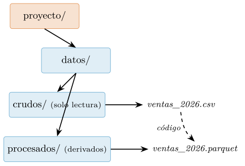
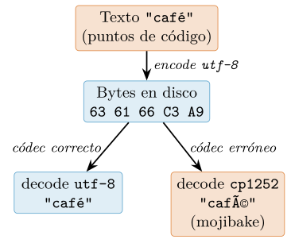
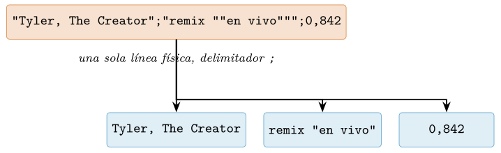
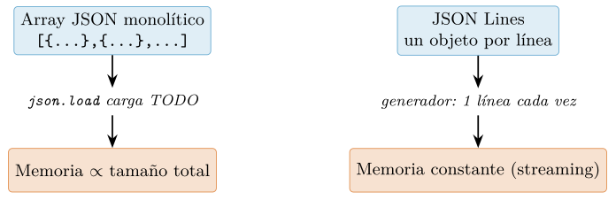
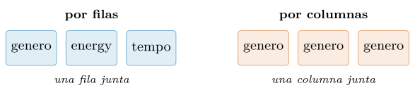
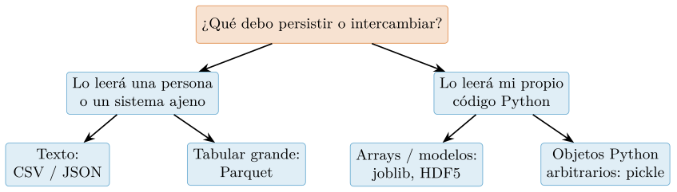
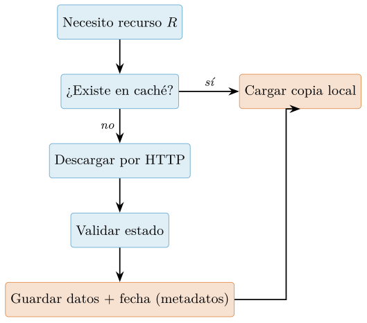
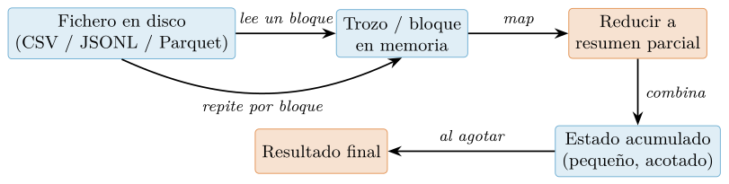
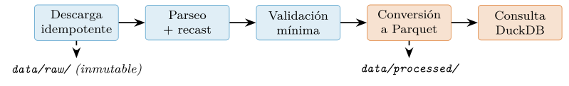

Capítulo 5. Entrada/salida, ficheros y formatos de datos
▶ Ejecutar este capítulo en Binder
La primera vez que se abre, Binder construye el entorno en la nube (unos 10-20 min); verás una pantalla de progreso. Después queda en caché y abre en segundos. Si parece que no responde, espera a que termine de construirse o vuelve a intentarlo.
Un análisis empieza y termina en un fichero: los datos entran en algún formato y los resultados salen a otro. Dominar la entrada/salida —y, sobre todo, elegir el formato adecuado— es una habilidad que se subestima hasta que un CSV mal codificado corrompe un análisis o un JSON de gigabytes no cabe en memoria. Este capítulo recorre desde el fichero de texto y las rutas portables hasta los formatos columnares que son el estándar analítico de 2026, pasando por los formatos de intercambio (CSV, JSON), la serialización, los datos remotos (HTTP, APIs), las bases de datos y SQL, y el procesamiento en flujo de datos que no caben en la RAM. Se apoya en el gestor de contexto y los generadores del cap. 3 y en la codificación de texto del cap. 2; prepara el terreno para el análisis con pandas (cap. 8) y polars (cap. 9).
Ficheros, el gestor de contexto y pathlib
Antes de hablar de formatos concretos (CSV en §5.3, JSON, Parquet) conviene fijar los dos cimientos sobre los que se apoya toda operación de entrada/salida en Python: cómo se abre y cierra un fichero de forma segura, y cómo se nombra dónde vive ese fichero de manera portable. Estos dos temas parecen elementales, pero son la fuente de una fracción sorprendente de los errores en tuberías de datos reales: ficheros que quedan abiertos y agotan los descriptores del sistema operativo, escrituras que se corrompen porque el proceso murió antes de vaciar el buffer, y rutas codificadas a mano con barras que funcionan en la máquina del autor y fallan en producción. La disciplina que introducimos aquí –gestor de contexto para el ciclo de vida del recurso, pathlib para el nombrado– es transversal: la reutilizaremos al cargar tablas con pandas (cap. 8) y polars o DuckDB (cap. 9).
Abrir ficheros con open() y cerrarlos con with
La función incorporada open() es la puerta de entrada a los ficheros. Devuelve un objeto fichero (más precisamente, un objeto de flujo de la jerarquía io) que expone métodos como read(), write(), readline() e iteración línea a línea. Su firma esencial es open(file, mode=’r’, encoding=None, newline=None), y cada uno de esos argumentos merece atención porque sus valores por defecto ocultan decisiones importantes (Python Software Foundation 2026b).
Un objeto fichero es un recurso del sistema operativo: al abrirlo, el proceso consume un descriptor de fichero, un número finito y a menudo escaso (el límite blando típico en Linux es 1024). Además, en modo escritura los datos no van directamente al disco: se acumulan en un buffer en memoria y se vuelcan (flush) cuando el buffer se llena o cuando el fichero se cierra. De aquí surgen dos obligaciones ineludibles: todo fichero abierto debe cerrarse, y debe cerrarse aunque ocurra una excepción entre la apertura y el cierre. El código ingenuo no cumple ninguna de las dos si algo va mal.
# Fragil: si process(linea) lanza, f.close() nunca se ejecuta.
f = open("datos.txt", "r", encoding="utf-8")
for linea in f:
process(linea) # una excepcion aqui deja f abierto
f.close()La solución idiomática es el gestor de contexto with, presentado en el cap. 3 al estudiar el protocolo __enter__/__exit__. Un objeto fichero es un gestor de contexto: al entrar en el bloque with se devuelve el propio fichero, y al salir –por el final natural del bloque, por un return, o por una excepción que se propaga– se invoca __exit__, que cierra el fichero y vuelca el buffer. La garantía es absoluta: pase lo que pase dentro del bloque, el recurso se libera (Python Software Foundation 2026b; Ramalho 2022).
# Robusto: f.close() esta garantizado al salir del bloque.
with open("datos.txt", "r", encoding="utf-8") as f:
for linea in f: # iteracion perezosa: una linea cada vez
process(linea)
# Aqui f ya esta cerrado y vaciado, incluso si process() fallo.Merece la pena subrayar la iteración perezosa del bucle for linea in f: el objeto fichero es un iterador que produce una línea por paso sin cargar todo el contenido en memoria. Este patrón, hermano de los generadores del cap. 3, permite procesar ficheros de decenas de gigabytes con un uso de memoria constante, y es preferible a f.read() (que carga el fichero entero) o f.readlines() (que construye una lista con todas las líneas) siempre que el procesamiento sea línea a línea.
Cuando se necesita abrir varios ficheros a la vez –el caso típico de transformar un fichero de entrada en uno de salida– se puede anidar la sintaxis en un único with con varios gestores separados por comas, o usar paréntesis para repartirlos en varias líneas (soportado sin trucos desde Python 3.10):
with (
open("entrada.csv", "r", encoding="utf-8", newline="") as ent,
open("salida.csv", "w", encoding="utf-8", newline="") as sal,
):
for linea in ent:
sal.write(transforma(linea))
# Ambos ficheros se cierran en orden inverso al de apertura.Modo texto frente a modo binario
El argumento mode combina dos ejes ortogonales: qué se hace con el fichero (leer, escribir, añadir) y cómo se interpretan los bytes (texto o binario). Los componentes básicos son ’r’ (lectura, el defecto; falla si el fichero no existe), ’w’ (escritura, que trunca el fichero a cero bytes si ya existía), ’a’ (añadir al final sin borrar lo previo) y ’x’ (creación exclusiva, que falla si el fichero ya existe: útil para no sobrescribir por accidente). A cualquiera de ellos se le añade ’b’ para modo binario, o se deja implícito el modo texto. La Tabla 5.1 resume las combinaciones frecuentes.
| Modo | Tipo | Si no existe | Si ya existe |
|---|---|---|---|
’r’ |
texto | error | lee desde el inicio |
’w’ |
texto | lo crea | trunca el contenido |
’a’ |
texto | lo crea | escribe al final |
’x’ |
texto | lo crea | error (no sobrescribe) |
’rb’ |
binario | error | lee bytes crudos |
’wb’ |
binario | lo crea | trunca el contenido |
La distinción texto/binario es la más consecuente y la que más confusión genera. En modo texto el flujo devuelve y acepta objetos str: Python decodifica los bytes del disco a puntos de código Unicode a la lectura y los codifica de vuelta a la escritura, usando el encoding indicado. Además realiza traducción de saltos de línea (newline translation): en Windows, la secuencia \r\n del disco se presenta como un \n en memoria, y viceversa. En modo binario el flujo devuelve y acepta objetos bytes sin decodificar ni traducir nada: lo que hay en el disco es exactamente lo que se lee.
De aquí se derivan tres reglas prácticas. Primera: si el fichero contiene texto (CSV, JSON, código, logs), ábrelo en modo texto y especifica siempre encoding. El valor por defecto depende de la configuración regional del sistema operativo, de modo que un programa que omite encoding puede leer utf-8 en tu portátil y cp1252 en un servidor, corrompiendo silenciosamente las tildes y las eñes (el fenómeno del mojibake). Los detalles de Unicode, puntos de código y familias de codificación se tratan en el cap. 2; aquí basta la consigna operativa: encoding="utf-8" explícito, salvo que el origen del dato imponga otra cosa. Segunda: si el fichero es binario (imágenes, Parquet, un pickle, un gzip), ábrelo con ’b’; pasar encoding a un flujo binario es un error de tipo. Tercera: al leer o escribir CSV con el módulo csv, abre el fichero de texto con newline="" para desactivar la traducción de saltos de línea y delegarla en el propio módulo, tal como se detalla en §5.3.
# Texto: str de entrada/salida, con codificacion explicita.
with open("notas.txt", "w", encoding="utf-8") as f:
f.write("cañón, jamón, año\n") # tres str, se codifican a UTF-8
# Binario: bytes crudos, sin decodificar ni traducir saltos de linea.
with open("logo.png", "rb") as f:
cabecera = f.read(8) # objeto bytes; firma PNG
assert cabecera[:4] == b"\x89PNG"Rutas portables con pathlib.Path
Una ruta de fichero es un dato estructurado, no una simple cadena de caracteres, y tratarla como cadena es una de las trampas clásicas de la programación con ficheros. El separador de directorios difiere entre sistemas (/ en Unix y macOS, \ en Windows), y concatenar fragmentos a mano introduce errores sutiles: barras dobladas, barras faltantes, separadores incorrectos. El módulo pathlib de la biblioteca estándar resuelve esto con una clase, Path, que modela rutas de forma orientada a objetos y elige el separador correcto del sistema anfitrión automáticamente (Python Software Foundation 2026b; Slatkin 2020). McKinney (2022) recomienda pathlib como la forma canónica de manejar rutas en proyectos de datos modernos, y desde hace años las funciones de carga de pandas (cap. 8) aceptan objetos Path directamente allí donde antes exigían cadenas (The pandas development team 2026).
El corazón de la interfaz es el operador / sobrecargado, que une componentes de ruta insertando el separador correcto. Frente a la concatenación de cadenas, es legible, portable y no depende del sistema operativo:
from pathlib import Path
# NO hagas esto: fragil, separador cableado, propenso a errores.
ruta_mala = "datos" + "/" + "crudos" + "/" + "ventas_2026.csv"
# Hazlo asi: portable y legible.
RAIZ = Path("datos")
ruta = RAIZ / "crudos" / "ventas_2026.csv"
print(ruta) # datos/crudos/ventas_2026.csv (o con \ en Windows)
print(type(ruta)) # <class 'pathlib.PosixPath'>Un objeto Path expone propiedades que descomponen la ruta sin manipular texto. Las más usadas en ciencia de datos son .name (el último componente, con extensión), .stem (el nombre sin la última extensión), .suffix (la extensión, con el punto), .parent (el directorio contenedor) y .exists() (si la ruta existe en disco). Distinguir .stem de .suffix es especialmente cómodo para reetiquetar ficheros por lotes, por ejemplo al convertir un CSV crudo en un Parquet procesado.
p = Path("datos/crudos/ventas_2026.csv")
p.name # 'ventas_2026.csv'
p.stem # 'ventas_2026'
p.suffix # '.csv'
p.parent # PosixPath('datos/crudos')
p.exists() # True o False segun el disco
# Derivar el destino procesado a partir del origen crudo:
destino = Path("datos/procesados") / (p.stem + ".parquet")
# -> datos/procesados/ventas_2026.parquetPath también ofrece acceso directo al contenido para los casos sencillos: .read_text(``encoding=...) y .write_text(texto, encoding=...) leen o escriben un fichero de texto completo en una sola llamada (con sus análogos binarios .read_bytes() y .write_bytes()), abriendo y cerrando el fichero internamente. Son perfectos para ficheros de configuración o metadatos pequeños; para ficheros grandes se sigue prefiriendo el with con iteración perezosa de §5.1.1, porque .read_text() carga todo en memoria. Para recorrer directorios, .iterdir() produce los hijos inmediatos, y .glob(patron) filtra por patrón (* casa cualquier fragmento; ** desciende recursivamente por subdirectorios).
crudos = Path("datos/crudos")
# Leer un fichero pequeno de una vez (config, metadatos):
config = Path("config.json").read_text(encoding="utf-8")
# Listar los hijos inmediatos del directorio:
for hijo in crudos.iterdir():
print(hijo.name, "->", "dir" if hijo.is_dir() else "fichero")
# Todos los CSV, incluso en subcarpetas, ordenados:
for csv in sorted(crudos.glob("**/*.csv")):
print(csv)Crudos inmutables, procesados derivados
La anatomía de proyecto del cap. 1 distinguía, dentro del directorio de datos, entre datos/crudos y datos/procesados. Esa separación no es cosmética: encarna un principio de reproducibilidad. Los datos crudos son la evidencia primaria tal como se recibió de la fuente –una descarga, un volcado de base de datos, un fichero que envió un colaborador– y se tratan como inmutables y de solo lectura: nunca se editan ni se sobrescriben en el sitio. Todo lo demás –limpieza, normalización, uniones, agregados– se escribe en datos/procesados como resultado derivado de ejecutar código sobre los crudos. Si un fichero procesado se corrompe o se pierde, siempre puede regenerarse; si un crudo se pierde, la evidencia primaria desaparece.
Esta disciplina tiene consecuencias operativas concretas. Los crudos se abren en modo lectura (’r’ o ’rb’), jamás en ’w’ ni ’a’. Los procesados se escriben preferentemente con la técnica de escritura atómica de §5.1.2, para que un fallo a mitad de la tubería no deje un fichero derivado a medias que aparente estar completo. Y la conversión de un formato de intercambio, como CSV, a un formato columnar eficiente, como Parquet (§5.5), es el ejemplo canónico de esta separación: el CSV vive en crudos, el Parquet en procesados, y el código que va de uno a otro es reproducible y versionable. La Figura 5.1 muestra el árbol.

El esqueleto de una tubería que respeta estas convenciones reúne todo lo anterior: pathlib para nombrar rutas de forma portable, with para garantizar el cierre, modo y codificación explícitos, y una frontera nítida entre lo que se lee y lo que se escribe.
from pathlib import Path
CRUDOS = Path("datos/crudos")
PROCESADOS = Path("datos/procesados")
PROCESADOS.mkdir(parents=True, exist_ok=True) # asegura el destino
def procesar(origen: Path) -> Path:
"""Lee un CSV crudo (solo lectura) y escribe su version limpia."""
destino = PROCESADOS / origen.name
with (
open(origen, "r", encoding="utf-8", newline="") as ent,
open(destino, "w", encoding="utf-8", newline="") as sal,
):
for linea in ent: # perezoso: memoria constante
sal.write(limpia(linea))
return destino
for csv in sorted(CRUDOS.glob("*.csv")):
print("procesado ->", procesar(csv))Con estos cimientos –apertura segura, modos correctos y rutas portables– podemos pasar a los formatos concretos. El primero, por su ubicuidad y sus trampas, es el CSV, que abordamos en §5.3; después vendrán JSON, Parquet y los formatos columnares que sustentan el flujo de datos moderno (McKinney 2022; Apache Software Foundation 2026a).
Codificación de texto: UTF-8 y el mojibake
En un capítulo anterior establecimos la distinción conceptual esencial sobre la que descansa toda esta sección: un texto es una secuencia abstracta de puntos de código Unicode, mientras que un fichero en disco es una secuencia concreta de bytes. El puente entre ambos mundos es una codificación (un códec): la regla que traduce puntos de código a bytes al escribir y bytes a puntos de código al leer. No reexplicamos aquí esa teoría; la aplicamos. Y la aplicamos en el único lugar donde importa a efectos prácticos: en la frontera de entrada/salida, es decir, en el instante exacto en que abrimos un fichero. Todo lo que ocurre dentro de un programa Python 3 sucede sobre objetos str, que son secuencias de puntos de código sin codificación asociada; la codificación solo entra en juego al cruzar la membrana que separa la memoria del disco, la red o cualquier flujo de bytes (Ramalho 2022).
La consecuencia operativa es contundente y conviene enunciarla como principio antes de justificarla: al abrir un fichero de texto, especifique siempre el parámetro encoding, y salvo razón imperiosa en contra ese parámetro debe valer ’utf-8’. Omitirlo no significa «no usar codificación»; significa delegar la elección en el sistema operativo, y esa delegación es la fuente número uno de errores de portabilidad en el software de datos.
El error de portabilidad número uno: la codificación por defecto
Cuando se invoca open(ruta) sin argumento encoding, Python no adivina la codificación del fichero. Elige una codificación por defecto que depende de la plataforma donde se ejecuta el programa, no del contenido del fichero. Históricamente esa elección venía dada por la función locale.getpreferredencoding(), cuyo resultado difiere de manera notoria entre sistemas: en Windows suele ser cp1252 (una codificación de un solo byte, propia de la Europa occidental); en Linux y macOS modernos es casi siempre utf-8, condicionada por las variables de entorno de configuración regional (LANG, LC_CTYPE).
El problema es insidioso porque no se manifiesta en la máquina de quien escribe el código. Un analista desarrolla en Linux, donde la codificación por defecto es UTF-8, guarda un fichero con caracteres acentuados y todo funciona. El mismo programa, ejecutado sin cambios en un servidor de despliegue Windows o en el portátil de un colega, abre ese fichero con cp1252, y en el primer byte que no pertenezca al plano ASCII el intérprete lanza un UnicodeDecodeError o, peor, decodifica silenciosamente basura. McKinney (2022) insiste en que la carga de datos textuales es reproducible únicamente si la codificación se fija de forma explícita en el código, y no se hereda del entorno.
# FRAGIL: la codificacion depende de la maquina donde se ejecute
with open("ventas.csv") as f: # encoding implicito del sistema
contenido = f.read()
# ROBUSTO Y PORTABLE: la codificacion forma parte del contrato del codigo
with open("ventas.csv", encoding="utf-8") as f:
contenido = f.read()Reténgase la diferencia: en la primera versión el comportamiento del programa es una función de la máquina; en la segunda, una función del código. Solo la segunda es reproducible. El uso del gestor de contexto with es aquí, además de buena práctica de cierre de recursos, el lugar natural donde documentar la codificación.
Python 3.15 consolida una tendencia iniciada con la PEP 597 y el EncodingWarning: se recomienda que toda apertura de texto declare su codificación, y el intérprete puede emitir un aviso cuando se omite. La activación del modo UTF-8 (variable PYTHONUTF8=1 o la opción -X utf8) fuerza UTF-8 como codificación por defecto con independencia de la configuración regional; es una red de seguridad útil en despliegues, pero no sustituye a la declaración explícita en el código, que sigue siendo la práctica canónica.
# Forzar UTF-8 como codificacion por defecto del interprete (red de seguridad)
export PYTHONUTF8=1
python analisis.py
# Equivalente puntual, sin tocar el entorno
python -X utf8 analisis.pyEstrategias ante bytes no decodificables: el parámetro errors
Fijar encoding=’utf-8’ resuelve la ambigüedad de la elección, pero no garantiza que todo byte del fichero sea decodificable: un fichero puede estar corrupto, contener una mezcla de codificaciones o venir etiquetado erróneamente. El parámetro errors de open() (y de los métodos bytes.decode y str.encode) gobierna qué hacer ante una secuencia de bytes que el códec no sabe interpretar. La Tabla 5.2 resume las cuatro políticas de uso más frecuente.
| Valor | Efecto ante byte inválido | Cuándo usarlo |
|---|---|---|
strict |
Lanza UnicodeDecodeError |
Por defecto. En ingesta de datos: falle pronto y ruidosamente. |
replace |
Sustituye por U+FFFD (\uFFFD) |
Mostrar texto al usuario tolerando pérdida; nunca en datos que se reprocesan. |
ignore |
Descarta el byte inválido | Casi nunca; oculta el problema y desplaza el contenido silenciosamente. |
backslashreplace |
Escapa como \xNN |
Depuración: preserva el byte original de forma inspeccionable y reversible. |
La recomendación por defecto para la ingesta de datos es strict. En un pipeline de ciencia de datos, un byte no decodificable es un síntoma de un problema aguas arriba (un fichero mal etiquetado, una exportación defectuosa) que conviene detectar de inmediato, no enmascarar. Los modos replace e ignore son destructivos: introducen pérdida de información irreversible y pueden corromper silenciosamente un conjunto de datos, con consecuencias que solo aparecen mucho más tarde en el análisis. El modo backslashreplace es el aliado del depurador: no pierde información y hace visible el byte problemático.
datos = b"caf\xe9" # 'cafe' + 0xE9, que es 'e con acento' en cp1252/latin-1
datos.decode("utf-8", errors="strict") # -> UnicodeDecodeError
datos.decode("utf-8", errors="replace") # -> 'caf<?>' (perdida)
datos.decode("utf-8", errors="ignore") # -> 'caf' (perdida)
datos.decode("utf-8", errors="backslashreplace") # -> 'caf\\xe9' (inspeccionable)
datos.decode("cp1252") # -> 'cafe' correcto: era cp1252El último caso es revelador: el byte 0xE9 no era ruido, sino la codificación de una letra acentuada en cp1252. El error no estaba en los datos, sino en el códec elegido para leerlos. Este es precisamente el mecanismo del mojibake, que analizamos a continuación.
Mojibake: anatomía de un desajuste de códecs
El término mojibake (del japonés, «transformación de caracteres») designa el texto ilegible que resulta de codificar bytes con un códec y decodificarlos con otro distinto. No es corrupción de datos en sentido físico: los bytes en disco están intactos. Es un desajuste de interpretación. El síntoma clásico son cadenas del estilo de é, ñ o ¿ apareciendo donde debería haber é, ñ o ¿.
Sigamos el ciclo completo con un ejemplo. La cadena café contiene el punto de código U+00E9 para la é. Al codificarla en UTF-8, ese punto de código produce dos bytes: 0xC3 0xA9. Si otro programa lee esos dos bytes pero los decodifica con cp1252 (un byte por carácter), interpreta 0xC3 como à y 0xA9 como ©, produciendo café \(\rightarrow\) café. La Figura 5.2 traza este recorrido.

C3 A9 para la é) producen texto correcto o mojibake según el códec con el que se decodifiquen. El fallo está en la interpretación, no en los bytes.La lección práctica es doble. Primera: el mojibake casi nunca se puede «arreglar» actuando sobre el texto ya decodificado; hay que volver al origen y decodificar con el códec correcto. Segunda: en algunos casos de doble desajuste el daño es recuperable si se conoce la cadena de errores, revirtiendo la mala decodificación. El siguiente listado ilustra una ida y vuelta que rescata texto ya convertido en mojibake, técnica útil pero frágil que debe reservarse para reparaciones puntuales.
mal = "café" # mojibake: bytes UTF-8 leidos como cp1252
# Revertimos: re-codificamos con cp1252 para recuperar los bytes originales,
# y los decodificamos con el codec que debio usarse desde el principio.
recuperado = mal.encode("cp1252").decode("utf-8")
print(recuperado) # -> 'cafe' con acento correctoEl BOM y la variante utf-8-sig
El BOM (byte order mark) es un carácter Unicode, U+FEFF, que algunas herramientas anteponen al inicio de un fichero de texto para señalar su codificación y, en UTF-16/UTF-32, el orden de bytes (endianness). En UTF-8 el orden de bytes es irrelevante, por lo que el BOM no cumple aquí función técnica alguna; sin embargo, ciertos programas del ecosistema Windows —de manera destacada Microsoft Excel al exportar CSV— lo escriben como firma. En UTF-8 ese BOM ocupa los tres bytes 0xEF 0xBB 0xBF al comienzo del fichero.
El efecto secundario es molesto: si se lee ese fichero con el códec utf-8 liso, el BOM no desaparece; se decodifica como un carácter U+FEFF invisible pegado al primer campo. En un CSV, esto convierte el nombre de la primera columna id en \ufeffid, y las comparaciones de cabeceras fallan de forma desconcertante. La solución es leer con el códec utf-8-sig, que consume y descarta el BOM si está presente y funciona igual si no lo está.
# Fichero exportado por Excel con BOM: EF BB BF al inicio
crudo = b"\xef\xbb\xbfid,nombre\n1,Ana\n"
crudo.decode("utf-8") # -> '<BOM>id,nombre\n1,Ana\n' (BOM pegado a 'id')
crudo.decode("utf-8-sig") # -> 'id,nombre\n1,Ana\n' (BOM eliminado)
# Al abrir ficheros de origen Windows/Excel, utf-8-sig es la eleccion segura
with open("export_excel.csv", encoding="utf-8-sig", newline="") as f:
cabecera = f.readline().rstrip("\n")Como regla asimétrica: para leer use utf-8-sig, que tolera la presencia o ausencia de BOM; para escribir, prefiera utf-8 sin firma, pues el BOM en UTF-8 solo genera problemas de interoperabilidad con herramientas Unix. Reserve la escritura con utf-8-sig para el caso concreto de generar CSV destinados a abrirse con Excel en configuraciones regionales que, de lo contrario, no reconocerían el fichero como UTF-8.
Saltos de línea universales: el parámetro newline
Ortogonal a la codificación de caracteres, pero copartícipe de los mismos dolores de portabilidad, está la representación del fin de línea. Unix y macOS moderno usan un solo byte, LF (\n); Windows usa dos, CR+LF (\r\n). Por defecto, al abrir en modo texto Python activa el modo de saltos de línea universales: al leer, traduce cualquier variante (\n, \r\n, \r) a \n en memoria; al escribir, traduce \n al separador de la plataforma. Este comportamiento es cómodo para texto corriente, pero interfiere con formatos que gestionan sus propios saltos de línea.
El caso paradigmático es el CSV. El módulo csv de la biblioteca estándar necesita ver los saltos de línea sin traducir para distinguir un salto dentro de un campo entrecomillado de un salto que separa registros, tal como exige la RFC 4180 (Shafranovich 2005). Por ello, la documentación del módulo prescribe abrir el fichero con newline=’’ (cadena vacía), y desactiva la traducción y delega el manejo de fin de línea en el propio lector o escritor CSV. Omitir este detalle produce, en Windows, líneas en blanco espurias entre registros al escribir. Retengamos aquí la conjunción de parámetros correcta para la apertura de un CSV; el formato en sí y su relación con la RFC 4180 se tratan en detalle más adelante en este capítulo.
import csv
# Escritura de CSV portable: encoding explicito Y newline='' (RFC 4180)
filas = [["id", "genero"], [1, "clásica"], [2, "electrónica"]]
with open("generos.csv", "w", encoding="utf-8", newline="") as f:
escritor = csv.writer(f)
escritor.writerows(filas)
# Lectura simetrica
with open("generos.csv", encoding="utf-8", newline="") as f:
for fila in csv.reader(f):
print(fila)Detección de codificación: el último recurso
Todo lo anterior presupone que conocemos la codificación de nuestros ficheros, que es la situación deseable: la codificación debería ser un dato conocido, documentado y acordado, no algo que se adivina. En la práctica, sin embargo, uno se topa con ficheros heredados de procedencia incierta. Para esos casos existen detectores heurísticos como chardet y su sucesor más rápido charset-normalizer, que examinan la distribución estadística de los bytes y proponen una codificación con un grado de confianza.
Conviene enmarcar estas herramientas con precisión: son un último recurso, no un sustituto de encoding=’utf-8’. La detección es probabilística y puede errar, sobre todo en ficheros cortos o en aquellos que combinan idiomas; la codificación no está escrita en los bytes (salvo el caso del BOM), de modo que ninguna heurística puede recuperarla con certeza. El flujo de trabajo profesional es: detectar una sola vez sobre una muestra representativa, verificar el resultado a ojo, y a partir de ahí fijar esa codificación explícitamente en el código de ingesta. Nunca debe detectarse la codificación en cada apertura dentro de un pipeline de producción: ni por coste ni por fiabilidad.
# Ultimo recurso: fichero heredado de origen desconocido.
from charset_normalizer import from_path
resultado = from_path("legado_desconocido.txt").best()
print(resultado.encoding) # p.ej. 'cp1252' con cierta confianza
# Verificado el diagnostico, se FIJA en el codigo y no se vuelve a detectar:
with open("legado_desconocido.txt", encoding="cp1252") as f:
texto = f.read()Cerramos con la jerarquía de decisiones que debe interiorizar el analista, en orden de preferencia. Primero: exigir y documentar la codificación de cada fuente de datos, idealmente UTF-8 por ser el estándar de facto de la web y de los formatos modernos (JSON impone UTF-8 (Bray 2017)). Segundo: declarar siempre encoding de forma explícita al abrir, con utf-8-sig para lectura tolerante al BOM y newline=’’ para formatos con saltos de línea propios. Tercero: en la ingesta, mantener errors=’strict’ para que los desajustes afloren de inmediato. Y solo cuando todo lo anterior es imposible, en cuarto y último lugar, recurrir a la detección heurística, verificarla, y volver de inmediato a la vía explícita. La codificación de bytes se convierte así, en la frontera de entrada/salida, en una disciplina concreta y verificable cuyo incumplimiento es la causa más común de datos silenciosamente corruptos aguas abajo.
CSV: el formato tabular universal
El formato CSV (comma-separated values, valores separados por comas) es, con casi total seguridad, el formato de intercambio de datos tabulares más extendido del planeta. Cualquier hoja de cálculo lo exporta, cualquier base de datos lo vuelca, cualquier sensor lo escupe y cualquier lenguaje lo lee. Es texto plano, legible por un ser humano con un simple editor, diffable con git, transmisible por correo y trivial de generar. Estas virtudes explican su ubicuidad. Sin embargo, esa misma simplicidad aparente esconde una colección de trampas que arruinan sistemáticamente los primeros intentos de todo estudiante que decide, con la mejor de las intenciones, parsear un CSV partiendo cada línea por comas. Esta sección desmonta esa tentación, presenta las herramientas correctas de la biblioteca estándar y de pandas, explica por qué el CSV es en la práctica un “formato” mal definido y detalla su defecto estructural más grave: la ausencia total de tipos.
Por qué nunca se parte por comas: las trampas del CSV
La intuición del principiante es directa: un CSV es un conjunto de líneas, cada línea es un registro y los campos van separados por comas, así que linea.split(",") debería bastar. Esta intuición es casi siempre correcta y ocasionalmente desastrosa, que es la peor combinación posible: el código funciona con los datos de prueba y falla en producción con un dato real. Consideremos las cuatro trampas fundamentales.
Comas dentro de un campo. El valor textual
Tyler, The Creatorcontiene una coma que forma parte del dato —es el nombre artístico—, no un separador. La convención universal es entrecomillar (quoting) el campo:"Tyler, The Creator". Unsplit(",")ingenuo lo trocearía en dos campos espurios y desplazaría todas las columnas siguientes.Comillas dentro de un campo entrecomillado. Si el campo entrecomillado contiene a su vez una comilla doble, esta se duplica: el texto
remix "en vivo"se codifica como"remix ""en vivo""". La comilla de apertura, el par interno escapado y la de cierre conviven en el mismo campo.Saltos de línea dentro de un campo. Un campo entrecomillado puede contener saltos de línea reales. Esto significa que un registro lógico no equivale a una línea física del fichero: iterar el fichero línea a línea y tratar cada una como un registro es incorrecto en cuanto aparezca una dirección postal multilínea o un comentario libre.
El separador no siempre es la coma. En los países que usan la coma como separador decimal (España, Alemania, Francia, gran parte de Europa y Latinoamérica), el número “mil doscientos treinta y cuatro con cinco” se escribe
1234,5. Para no colisionar con el separador de campos, las herramientas locales (y Excel en configuración regional española) exportan CSV usando el punto y coma (;) como delimitador. El resultado es un fichero perfectamente válido que no contiene ni una sola coma como separador. Existen también variantes con tabulador (los llamados TSV) y con la barra vertical.
La conclusión operativa es tajante y conviene grabarla: nunca se parsea un CSV a mano partiendo por comas. El entrecomillado, el escapado de comillas y los saltos embebidos forman una pequeña gramática que ya está implementada, probada y optimizada en el módulo csv de la biblioteca estándar y en pandas. Reimplementarla es reintroducir errores conocidos.

split(";") ingenuo tampoco bastaría: hay que respetar el entrecomillado.El estándar RFC 4180 y por qué el CSV es un formato mal definido
Durante décadas el CSV no tuvo especificación alguna; era un acuerdo tácito entre implementaciones. En 2005 se publicó (Shafranovich 2005), que documenta a posteriori un dialecto común y le asigna el tipo MIME text/csv. Sus reglas centrales son: los campos se separan por comas; los registros por un retorno de carro y salto de línea (CRLF); un campo puede ir opcionalmente entre comillas dobles y debe ir entrecomillado si contiene comas, comillas o saltos de línea; y una comilla doble interna se escapa duplicándola. Opcionalmente, la primera línea puede ser una cabecera con los nombres de columna.
El problema es que (Shafranovich 2005) es informativo, no un estándar normativo de obligado cumplimiento, y su propio texto reconoce que documenta “el formato que parecen seguir la mayoría de las implementaciones”. En la práctica el CSV es una familia de formatos que difieren en el delimitador (coma, punto y coma, tabulador, barra), el carácter de entrecomillado (comilla doble o simple), el estilo de fin de línea (LF de Unix frente a CRLF de Windows), la codificación de caracteres (UTF-8, Latin-1, el infame “UTF-8 con BOM” que Excel antepone, tratado en el Capítulo 2), la presencia o ausencia de cabecera, y hasta convenciones sobre espacios tras el delimitador. A este conjunto de decisiones se le llama dialecto. No existe forma fiable de deducir el dialecto sin metadatos externos o sin heurística: por eso el CSV es, con toda propiedad, un formato mal definido. Herramientas robustas exponen el dialecto como parámetros explícitos, y pandas documenta decenas de ellos en (The pandas development team 2026).
El módulo csv: reader, DictReader y escritura
La biblioteca estándar resuelve el parseo con el módulo csv. Su reader recibe un objeto iterable de líneas (típicamente un fichero abierto) y produce, por cada registro lógico, una lista de cadenas ya des-entrecomilladas y con los saltos embebidos respetados. Nótese un detalle crítico de robustez: el fichero se abre con newline="" para que sea el módulo csv, y no la capa de E/S de texto, quien gestione los saltos de línea; omitirlo corrompe los campos multilínea. La gestión de recursos se hace con el gestor de contexto with presentado en el Capítulo 3.
import csv
# Lectura por filas como listas de cadenas.
with open("ventas.csv", newline="", encoding="utf-8") as f:
lector = csv.reader(f) # dialecto por defecto: RFC 4180
cabecera = next(lector) # primera fila = nombres de columna
for fila in lector: # cada 'fila' es una lista[str]
# fila[0], fila[1], ... TODO es texto todavia (ver mas abajo)
print(fila)Trabajar con índices numéricos (fila[0], fila[1]) es frágil: si cambia el orden de columnas, el código rompe en silencio. DictReader resuelve esto asociando cada campo a su nombre de cabecera y devolviendo un diccionario por registro, mucho más legible y robusto ante reordenaciones.
import csv
with open("ventas.csv", newline="", encoding="utf-8") as f:
lector = csv.DictReader(f) # usa la 1a fila como claves
for registro in lector: # cada 'registro' es un dict
ciudad = registro["ciudad"]
importe = registro["importe"] # sigue siendo strLa escritura es simétrica con writer y DictWriter. El módulo se encarga de entrecomillar cuando es necesario, de escapar las comillas internas y de emitir el fin de línea correcto. Igual que en la lectura, newline="" es obligatorio para no duplicar los saltos de línea en Windows.
import csv
filas = [
{"artista": "Tyler, The Creator", "titulo": 'en "vivo"', "energia": 0.8},
{"artista": "Rosalía", "titulo": "Malamente", "energia": 0.71},
]
with open("temas.csv", "w", newline="", encoding="utf-8") as f:
campos = ["artista", "titulo", "energia"]
escritor = csv.DictWriter(f, fieldnames=campos, quoting=csv.QUOTE_MINIMAL)
escritor.writeheader()
escritor.writerows(filas) # entrecomillado y escapado automaticosDialectos: delimiter, quotechar y quoting
El comportamiento del módulo se configura mediante los parámetros de dialecto. Los tres principales son delimiter (el carácter separador de campos), quotechar (el carácter de entrecomillado) y quoting (la política sobre cuándo entrecomillar al escribir). La Tabla 5.3 resume las políticas de quoting.
| Constante | Comportamiento al escribir |
|---|---|
QUOTE_MINIMAL |
Entrecomilla sólo los campos que contienen delimitador, quotechar o salto de línea. Es el valor por defecto y el recomendado. |
QUOTE_ALL |
Entrecomilla todos los campos, sin excepción. |
QUOTE_NONNUMERIC |
Entrecomilla todo lo que no sea numérico; al leer, convierte a float los campos no entrecomillados. |
QUOTE_NONE |
No entrecomilla nunca; exige un carácter de escape explícito y falla si el dato contiene el delimitador. |
Para el CSV europeo con punto y coma como delimitador, basta indicarlo explícitamente. Conviene no fiarse de la autodetección sin control:
import csv
with open("europeo.csv", newline="", encoding="utf-8") as f:
lector = csv.reader(f, delimiter=";", quotechar='"')
for fila in lector:
# atencion: los decimales vendran como "0,842" (coma decimal)
...El módulo ofrece además csv.Sniffer, una heurística que intenta adivinar el dialecto a partir de una muestra del fichero. Es útil en pipelines interactivos de exploración, pero no debe usarse a ciegas en producción: adivina, y las adivinanzas fallan. En un flujo reproducible, el dialecto es un parámetro de configuración, no algo que se infiere en cada ejecución.
El CSV no guarda los tipos de dato
Aquí reside el defecto conceptual más profundo del formato, más allá de las trampas sintácticas. Un CSV no almacena tipos: todo es texto. El módulo csv devuelve cadenas; el número entero 42, la fecha 2026-07-01, el booleano True y la palabra hola son, para el fichero, exactamente lo mismo: secuencias de caracteres indistinguibles en su naturaleza. La consecuencia es que el consumidor debe recastear (re-cast) cada campo a su tipo lógico, y esa reconstrucción es una fuente inagotable de errores sutiles.
import csv
from decimal import Decimal
def parse_num(s: str) -> Decimal:
# OJO: CSV europeo usa coma decimal. Normalizamos antes de convertir.
return Decimal(s.replace(".", "").replace(",", "."))
with open("europeo.csv", newline="", encoding="utf-8") as f:
lector = csv.DictReader(f, delimiter=";")
registros = []
for r in lector:
registros.append({
"genero": r["genero"],
"popularidad": int(r["popularidad"]), # texto -> int
"energia": parse_num(r["energia"]), # texto -> Decimal
"tempo": parse_num(r["tempo"]), # texto -> Decimal
})Los peligros del recasteo son numerosos: los códigos postales o identificadores con ceros a la izquierda (08001) se destruyen si se convierten ingenuamente a entero; los valores ausentes se representan de formas incompatibles (cadena vacía, NA, NULL, -, NaN); la coma decimal europea exige normalización previa; y las fechas sin formato explícito son ambiguas (¿03/04 es 3 de abril o 4 de marzo?). Todo esto es trabajo que el formato debería haber ahorrado y no ahorra. Un principio de tidy data (Wickham 2014) es que cada variable ocupe una columna con un tipo coherente; el CSV no ofrece ninguna garantía al respecto y delega toda la responsabilidad en quien lee.
Por contraste, los formatos columnares como Parquet (Sección 5.5) almacenan el esquema junto a los datos: cada columna lleva su tipo, su codificación y sus estadísticas. Al cargar un Parquet no hay recasteo, no hay ambigüedad de decimales ni de fechas, y no hay pérdida de ceros a la izquierda. Esta diferencia, tratada en profundidad más adelante, es la razón de fondo por la que el CSV es un excelente formato de intercambio pero un pésimo formato de almacenamiento analítico, tal y como argumentan las discusiones sobre modelos de datos en sistemas intensivos (Kleppmann 2017).
Cuándo el módulo csv y cuándo pandas
Existen dos herramientas y la elección no es de gusto, sino de escenario. El módulo csv procesa el fichero fila a fila en flujo (streaming), sin cargar nada más que un registro en memoria a la vez; es la opción correcta para ficheros gigantescos que no caben en RAM, para tareas de transformación puramente secuenciales (filtrar, reformatear, enrutar), para dependencias mínimas, y cuando se necesita control absoluto sobre cada byte. Se combina de forma natural con los generadores del Capítulo 3 para construir tuberías perezosas.
pandas, mediante read_csv, carga el fichero completo en un DataFrame en memoria e infiere tipos automáticamente, además de ofrecer un ecosistema completo de manipulación analítica descrito por McKinney (2022). Es la opción correcta cuando los datos caben en memoria y el objetivo es el análisis. Su firma admite decenas de parámetros que capturan exactamente el dialecto y las trampas anteriores: sep=";" para el delimitador europeo, decimal="," para la coma decimal, encoding para la codificación, dtype para forzar tipos (por ejemplo, tratar un código postal como cadena), parse_dates para las fechas y na_values para los centinelas de ausencia.
import pandas as pd
df = pd.read_csv(
"europeo.csv",
sep=";", # delimitador europeo
decimal=",", # coma decimal -> float correcto
encoding="utf-8",
dtype={"track_id": "string"}, # id opaco: nunca como numero
na_values=["", "NA", "-", "NULL"], # centinelas de ausencia
)
# La escritura simetrica: index=False evita una columna espuria.
df.to_csv("limpio.csv", index=False, sep=";", decimal=",")El recasteo que en el módulo csv era manual, aquí se declara como configuración; pero la inferencia de tipos por defecto también puede equivocarse (el clásico identificador con ceros a la izquierda convertido a entero), de modo que dtype y na_values explícitos siguen siendo imprescindibles para datos de calidad, cuestión que retoma el Capítulo 10. El análisis propiamente dicho sobre el DataFrame se estudia en el Capítulo 8, y las alternativas de alto rendimiento (Polars, DuckDB) en el Capítulo 9; aquí solo nos interesa la carga y la fidelidad al formato.
JSON y datos anidados
El formato CSV que hemos estudiado en Sección 5.3 descansa sobre una hipótesis fuerte: que los datos son rectangulares, es decir, que cada observación cabe en una fila de columnas homogéneas. Buena parte de los datos que produce el mundo real no satisface esa hipótesis. La respuesta de una API de música, la configuración de un servicio, el registro de un evento de usuario o el documento de una base NoSQL son estructuras anidadas: un valor puede a su vez contener una colección de valores, y estos otras colecciones, sin un límite fijo de profundidad ni un ancho constante. Para intercambiar este tipo de información, el estándar de facto de la web y de las interfaces programáticas (APIs) es JSON (JavaScript Object Notation). Esta sección presenta su modelo de datos, su manejo idiomático en Python, sus límites de serialización, la variante orientada a flujos (JSON Lines) y el puente hacia el análisis tabular, sin adentrarse en el análisis propiamente dicho, que corresponde a los cap. 8 y cap. 9.
El modelo de datos de JSON y su mapeo a Python
JSON está especificado por el (Bray 2017), que lo describe como un formato de texto, ligero e independiente del lenguaje, para el intercambio de datos estructurados. Su gramática es deliberadamente minúscula: solo existen dos estructuras compuestas y un puñado de escalares. Las estructuras compuestas son el objeto, una colección no ordenada de pares nombre–valor delimitada por llaves ({...}), y el array, una secuencia ordenada de valores delimitada por corchetes ([...]). Los valores escalares son la cadena de texto (siempre entre comillas dobles), el número, los literales true y false, y el literal null. Esta economía de tipos es la clave de su portabilidad: cualquier lenguaje con nociones de diccionario, lista, cadena, número y booleano puede representar un documento JSON sin pérdida estructural.
El (Bray 2017) fija además dos detalles con enorme importancia práctica para la ciencia de datos. El primero es que el texto JSON intercambiado entre sistemas que no forman parte de un ecosistema cerrado DEBE codificarse en UTF-8 (véase la teoría de codificaciones en el cap. 2); esto elimina la ambigüedad de codificación que sí padece el CSV. El segundo es que los nombres de un objeto deberían ser únicos, aunque el estándar no lo obliga: los analizadores que reciben nombres repetidos se comportan de forma dispar, por lo que conviene no depender de ese caso.
La correspondencia con los tipos nativos de Python es tan directa que el módulo estándar json la aplica sin configuración. El objeto JSON se convierte en dict, el array en list, la cadena en str, los números en int o float según tengan o no parte fraccionaria o exponente, los literales booleanos en bool y null en None. La Tabla 5.4 resume el mapeo. Esta naturalidad, unida al rico repertorio de estructuras de datos que se estudió en el cap. 4, hace que trabajar con JSON en Python resulte casi transparente.
| Tipo JSON | Tipo Python (lectura) | Nota |
|---|---|---|
objeto {...} |
dict |
claves siempre str |
array [...] |
list |
orden preservado |
| cadena | str |
Unicode, UTF-8 |
| número entero | int |
precisión arbitraria |
| número real | float |
doble IEEE 754 |
true / false |
bool |
|
null |
None |
Serializar y deserializar con el módulo json
El módulo estándar json expone cuatro funciones que conviene distinguir con precisión. Dos operan sobre cadenas en memoria: loads (load string) analiza una cadena y devuelve el objeto Python correspondiente, y dumps (dump string) hace la conversión inversa, serializando un objeto Python a una cadena JSON. Las otras dos operan sobre objetos fichero (o cualquier objeto con métodos read/write): load lee y analiza el contenido de un fichero, y dump escribe la serialización directamente en él. La regla mnemotécnica es que la s final significa string.
import json
texto = '{"ciudad": "Barcelona", "temp": 21.4, "activa": true, "tags": ["mar", "sol"]}'
obj = json.loads(texto) # str -> dict
print(type(obj), obj["tags"]) # <class 'dict'> ['mar', 'sol']
# Serializacion de vuelta a cadena
de_vuelta = json.dumps(obj)
print(de_vuelta) # {"ciudad": "Barcelona", "temp": 21.4, ...}Dos argumentos de dumps/dump son casi obligatorios en un contexto hispanohablante. El primero es ensure_ascii. Por razones históricas, su valor por defecto es True, y provoca que todo carácter no ASCII se escape con secuencias \u; así, una cadena como "España" no se conserva legible, sino que su ñ se convierte en la secuencia \u00f1. El resultado es válido pero ilegible para un humano y de mayor tamaño. Fijar ensure_ascii=False produce UTF-8 legible, lo cual es preferible casi siempre. El segundo argumento es indent, que activa una impresión con sangría (pretty printing) útil para inspección y para diffs de control de versiones; combinado con sort_keys=True facilita comparaciones deterministas.
datos = {"pais": "España", "ciudades": ["Málaga", "Gijón"]}
# Por defecto: escapa los no-ASCII (ilegible)
print(json.dumps(datos))
# {"pais": "España", "ciudades": ["Málaga", "Gijón"]}
# Legible y compacto en UTF-8, con sangria
print(json.dumps(datos, ensure_ascii=False, indent=2, sort_keys=True))
# {
# "ciudades": [
# "Málaga",
# "Gijón"
# ],
# "pais": "España"
# }La lectura y escritura de ficheros completos se apoya en el gestor de contexto with presentado en el cap. 3, e incorpora siempre la codificación explícita. Nótese que, aunque el contenido JSON sea UTF-8 por norma, el objeto fichero Python necesita conocer su encoding, pues de lo contrario adopta el del sistema.
# Escribir un documento a fichero
with open("config.json", "w", encoding="utf-8") as f:
json.dump(datos, f, ensure_ascii=False, indent=2)
# Leerlo de vuelta
with open("config.json", encoding="utf-8") as f:
recuperado = json.load(f)Los límites de la serialización: tipos que no viajan
El repertorio de tipos de JSON es más pobre que el de Python, y esa asimetría es fuente de errores frecuentes. El serializador por defecto solo sabe convertir los tipos que aparecen en la Tabla 5.4. Si se le entrega un objeto que no reconoce —un datetime.datetime, un decimal.Decimal, un set, un uuid.UUID, un objeto bytes o un ndarray de NumPy ((Harris et al. 2020))— levanta un TypeError. No existe una representación JSON canónica para una fecha ni para un decimal de precisión exacta; es responsabilidad del programador elegir una convención.
La vía idiomática para extender la serialización es el parámetro default de dumps/dump: una función que el serializador invoca únicamente con los objetos que no sabe tratar, y que debe devolver algo serializable (típicamente una cadena o un número). Para el caso de las fechas conviene adoptar el formato ISO 8601, que es ordenable lexicográficamente y no ambiguo.
import json
from datetime import datetime, date
from decimal import Decimal
def encoder(obj):
if isinstance(obj, (datetime, date)):
return obj.isoformat()
if isinstance(obj, Decimal):
return str(obj) # preserva la precision exacta
if isinstance(obj, set):
return sorted(obj)
raise TypeError(f"No serializable: {type(obj).__name__}")
registro = {"id": 7, "creado": datetime(2026, 3, 1, 9, 30),
"precio": Decimal("19.99"), "etiquetas": {"a", "b"}}
print(json.dumps(registro, default=encoder, ensure_ascii=False))
# {"id": 7, "creado": "2026-03-01T09:30:00", "precio": "19.99", ...}Cuando la lógica de conversión es compleja o reutilizable, se prefiere subclasificar json.JSONEncoder y redefinir su método default, que se pasa entonces con el argumento cls. Este patrón, junto con su simétrico object_hook para la deserialización, es el que recomiendan las obras de referencia sobre Python idiomático (Ramalho 2022; Beazley y Jones 2013).
JSON Lines: un objeto por línea para flujos y logs
Un documento JSON monolítico tiene un inconveniente serio para grandes volúmenes: es indivisible. Para leer un array de un millón de objetos hay que cargar y analizar el fichero entero antes de poder tocar el primer elemento, y consume memoria proporcional al tamaño total y hace imposible el procesamiento incremental. La convención JSON Lines (también ndjson, newline-delimited JSON) resuelve el problema con una idea simple: en lugar de un array, se escribe un objeto JSON completo por línea, separados por saltos de línea (\n), sin comas ni corchetes envolventes. Cada línea es un documento JSON autónomo y válido.
{"ts": "2026-06-30T10:00:01Z", "nivel": "INFO", "msg": "arranque"}
{"ts": "2026-06-30T10:00:02Z", "nivel": "WARN", "msg": "reintento"}
{"ts": "2026-06-30T10:00:05Z", "nivel": "ERROR", "msg": "timeout"}Este formato es idóneo para dos escenarios. El primero son los logs y flujos de eventos: un proceso puede ir anexando líneas (append) sin reescribir el fichero, y un fichero truncado a la mitad sigue siendo utilizable salvo por su última línea incompleta. El segundo es el streaming, es decir, el procesamiento de un conjunto de datos que no cabe en memoria (o que ni siquiera ha terminado de producirse) leyéndolo de forma perezosa. Como cada línea es independiente, basta iterar el fichero —que en Python es ya un iterador de líneas— y analizar cada una por separado. Esto enlaza de forma natural con los generadores del cap. 3 y con las técnicas de Sección 5.9: podemos encapsular la lectura en un generador que produce un objeto por vez, manteniendo un consumo de memoria constante e independiente del tamaño del fichero.
import json
from typing import Iterator
def leer_jsonl(ruta: str) -> Iterator[dict]:
"""Genera un objeto por linea; memoria O(1) por registro."""
with open(ruta, encoding="utf-8") as f:
for linea in f:
linea = linea.strip()
if linea: # ignora lineas en blanco
yield json.loads(linea)
def escribir_jsonl(ruta: str, registros: Iterator[dict]) -> None:
with open(ruta, "w", encoding="utf-8") as f:
for r in registros:
f.write(json.dumps(r, ensure_ascii=False))
f.write("\n")
# Uso perezoso: filtra errores sin cargar todo el fichero
errores = (r for r in leer_jsonl("eventos.jsonl") if r["nivel"] == "ERROR")
for r in errores:
print(r["ts"], r["msg"])Obsérvese la disciplina de escritura: se serializa cada objeto con dumps sin indent (la sangría introduciría saltos de línea internos que romperían la invariante de un objeto por línea) y se añade el \n manualmente. La Figura 5.4 contrasta la lectura monolítica frente a la de flujo. Este patrón generador es el fundamento de las canalizaciones de datos que veremos en cap. 9 con motores como (Raasveldt y Mühleisen 2019), capaces de consultar directamente ficheros .jsonl.

Aplanar datos anidados para el análisis tabular
Los datos anidados son excelentes para el intercambio, pero la mayoría de las herramientas analíticas —y buena parte de las técnicas estadísticas— esperan una tabla rectangular, idealmente en forma ordenada o tidy, donde cada variable es una columna y cada observación una fila (Wickham 2014). Convertir una estructura anidada en una tabla se denomina aplanar (flatten). La operación combina dos ideas: descender por los objetos anidados componiendo un nombre de columna a partir de la ruta de claves (por ejemplo, direccion.ciudad), y explotar (explode) las listas, generando una fila por elemento.
La biblioteca pandas (cap. 8) ofrece para el primer paso la función json_normalize, que aplana un objeto o una lista de objetos en un DataFrame, con parámetros para controlar el separador de rutas (sep), el nivel máximo de descenso (max_level) y, mediante record_path y meta, la expansión de listas internas manteniendo campos del nivel superior como metadatos repetidos.
import pandas as pd
datos = [
{"id": 1, "nombre": "Ana",
"direccion": {"ciudad": "Cádiz", "cp": "11001"},
"pedidos": [{"ref": "A1", "eur": 10}, {"ref": "A2", "eur": 25}]},
{"id": 2, "nombre": "Beto",
"direccion": {"ciudad": "León", "cp": "24001"},
"pedidos": [{"ref": "B1", "eur": 5}]},
]
# Aplanado simple: los objetos anidados se vuelven columnas con punto
df = pd.json_normalize(datos)
# columnas: id, nombre, direccion.ciudad, direccion.cp, pedidos
# Explotar la lista 'pedidos' a una fila por pedido, con metadatos
detalle = pd.json_normalize(
datos, record_path="pedidos",
meta=["id", "nombre", ["direccion", "ciudad"]])
# columnas: ref, eur, id, nombre, direccion.ciudadEl detalle exhaustivo de json_normalize y su rendimiento pertenecen al cap. 8 (McKinney 2022; The pandas development team 2026); aquí basta con reconocer que existe un puente estándar entre la carga de JSON y la representación tabular, y que ese puente puede alimentarse con el generador de JSON Lines de la subsección anterior. Para volúmenes grandes, los motores columnar de cap. 9 realizan un aplanado equivalente de forma más eficiente y sin materializar toda la estructura en memoria.
Cuándo CSV y cuándo JSON
CSV y JSON no compiten: resuelven necesidades distintas y la elección debe ser deliberada. CSV ((Shafranovich 2005)) es óptimo cuando los datos son planos y homogéneos: un esquema fijo de columnas, tipos regulares, gran volumen de filas y consumo por herramientas que esperan tablas. Su formato es compacto, se lee en flujo trivialmente línea a línea y es universal en hojas de cálculo y bases de datos. Sus debilidades son la ausencia de tipos (todo es texto), la incapacidad nativa de representar anidamiento y la fragilidad ante las variantes de delimitador, comillas y codificación que se discutieron en Sección 5.3.
JSON ((Bray 2017)) es óptimo cuando los datos son anidados, heterogéneos o de esquema flexible: respuestas de API, configuración, documentos con campos opcionales y estructuras de profundidad variable. Aporta tipos básicos y anidamiento arbitrario, y es autodescriptivo hasta cierto punto porque los nombres viajan con los valores. A cambio, es más verboso (los nombres se repiten en cada objeto), su análisis es más costoso y su naturaleza monolítica exige la variante JSON Lines para el procesamiento en flujo. La Tabla 5.5 sintetiza el contraste. Cuando el objetivo es almacenamiento analítico masivo con tipado fuerte, ninguno de los dos es ideal y conviene mirar hacia los formatos columnar binarios —Arrow y Parquet ((Apache Software Foundation 2026a, 2026b))— que se tratan más adelante y que son hoy el estándar en canalizaciones de datos a gran escala (Kleppmann 2017).
| Criterio | CSV ((Shafranovich 2005)) | JSON ((Bray 2017)) |
|---|---|---|
| Estructura | plana, rectangular | anidada, arbórea |
| Esquema | fijo, homogéneo | flexible, opcional |
| Tipos | todo texto | escalares básicos |
| Tamaño | compacto | verboso |
| Streaming | nativo (por línea) | vía JSON Lines |
| Uso típico | tablas, exportación | APIs, configuración, logs |
En la práctica de la ciencia de datos ambos coexisten: una canalización habitual ingiere JSON o JSON Lines desde una API (a menudo con clientes HTTP modernos como (Encode OSS Ltd. 2026)), lo aplana a una representación tabular para el análisis, y exporta el resultado a CSV, Parquet o una base de datos relacional. Dominar la conversión fluida entre el mundo anidado y el mundo tabular es, por ello, una de las destrezas centrales del capítulo.
Parquet y Arrow: formatos columnares
Aquí está la actualización más importante de este capítulo respecto a un curso clásico, que suele terminar en el CSV. Para el trabajo serio con datos, el CSV tiene cuatro defectos graves. No guarda los tipos: todo es texto, y en cada carga hay que reinferir si una columna es entera, decimal o una fecha, con el riesgo de que la inferencia falle (§5.3). Es voluminoso, porque almacena números como cadenas de dígitos sin comprimir. Es lento de parsear, porque hay que convertir texto a valores uno a uno. Y es orientado a filas: los valores de una misma fila están juntos, de modo que para leer una sola columna hay que recorrer el fichero entero. El estándar analítico moderno resuelve los cuatro problemas a la vez: Apache Parquet, un formato columnar, tipado, comprimido y binario (Apache Software Foundation 2026b).
Por qué el almacenamiento columnar
La diferencia esencial se ilustra en la figura 5.5. Un formato orientado a filas guarda, uno tras otro, todos los campos de la primera fila, luego los de la segunda, y así sucesivamente; es lo natural para insertar o leer registros completos, como hace una base de datos transaccional. Un formato columnar invierte la disposición: guarda juntos todos los valores de la primera columna, luego todos los de la segunda. Esta reorganización, que parece un detalle de ingeniería, tiene tres consecuencias decisivas para el análisis (Kleppmann 2017).

Primero, la lectura selectiva de columnas (projection pushdown): un análisis que solo necesita dos de las cincuenta columnas de una tabla lee únicamente esas dos, sin tocar el resto del fichero; en un CSV habría que leerlo entero. Segundo, la compresión es mucho mejor, porque los valores de una columna son del mismo tipo y a menudo se repiten o varían poco, y los algoritmos de compresión (y codificaciones como run-length o dictionary encoding) explotan esa homogeneidad (Kleppmann 2017). Tercero, las operaciones vectorizadas de la Parte III operan sobre memoria contigua de un mismo tipo, que es exactamente lo que una columna ofrece (cap. 7). En una tabla de tamaño real, el mismo dato en Parquet suele ocupar del orden de cinco a diez veces menos que en CSV y leerse mucho más rápido [citado: es el resultado esperable de la compresión y el tipado columnar; la magnitud exacta depende del dato].
import pandas as pd
df = pd.read_csv("musica.csv")
df.to_parquet("musica.parquet") # tipado, comprimido, columnar
# al releer se conservan los tipos: no hay que reinferir nada
solo_dos = pd.read_parquet("musica.parquet",
columns=["track_genre", "popularity"]) # lee SOLO 2Arrow: la memoria columnar compartida
Si Parquet es el formato columnar en disco, Apache Arrow es su equivalente en memoria: una representación columnar estándar que distintas bibliotecas y lenguajes acuerdan usar (Apache Software Foundation 2026a). Su valor está en la interoperabilidad sin copia (zero-copy): cuando pandas, polars, DuckDB o Spark comparten los mismos datos en formato Arrow, pueden pasárselos sin serializar ni convertir nada, porque todos entienden la misma disposición de bytes. Arrow es la razón por la que el ecosistema de 2026 encaja tan bien, y es el motor interno del backend de tipos de pandas 2.x (cap. 8) y de polars (cap. 9). La biblioteca pyarrow da acceso directo, y basta pedir el backend Arrow al leer para obtener tipos nulos de verdad y cadenas eficientes:
df = pd.read_parquet("musica.parquet", dtype_backend="pyarrow")
# ahora una columna entera con ausentes sigue siendo entera, con <NA> explicito| Propiedad | CSV | Parquet |
|---|---|---|
| Tipos | no (todo texto) | sí, guardados |
| Orientación | filas | columnas |
| Compresión | no | sí (por columna) |
| Tamaño | grande | \(\sim\)5–10\(\times\) menor |
| Legible | sí (texto) | no (binario) |
| Lectura selectiva | no | sí (projection pushdown) |
La recomendación práctica es clara: usa CSV o JSON cuando el dato deba ser legible por una persona o intercambiarse con una herramienta que no entienda otra cosa; usa Parquet para todo lo que sea trabajo de análisis, caché intermedia o almacenamiento de tablas. Convertir un CSV a Parquet en cuanto entra en el proyecto es uno de los hábitos que más aceleran un flujo de datos (McKinney 2022).
Otros formatos y serialización: elegir con criterio
Hasta aquí hemos trabajado con formatos de texto (CSV, JSON) y con el formato columnar Parquet, que cubren la inmensa mayoría de las necesidades de intercambio y análisis en ciencia de datos. Sin embargo, el ecosistema ofrece otros mecanismos de serialización — la conversión de estructuras en memoria a una secuencia de bytes persistible o transmisible— cada uno con un nicho legítimo y con contraindicaciones que conviene conocer antes de adoptarlos por inercia. Esta sección no pretende agotar cada formato, sino dar el criterio para elegir: qué garantiza cada uno, qué sacrifica y en qué escenario es la herramienta correcta. La regla de fondo que resume todo el capítulo es simple: texto (CSV/JSON) para intercambio humano y legibilidad; columnar (Parquet) para análisis; pickle/joblib solo para objetos propios de confianza.
Panorama de formatos y el eje texto–binario
La primera distinción operativa es entre formatos de texto y formatos binarios. Los primeros (CSV, JSON, XML) son inspeccionables con cualquier editor, versionables con git de forma legible, robustos frente a la evolución del software y neutrales respecto al lenguaje que los produjo; su coste es el tamaño, la lentitud de parseo y la ambigüedad de tipos (todo es texto hasta que alguien decide interpretarlo). Los formatos binarios (Parquet, Feather, HDF5, pickle) invierten el compromiso: son compactos y rápidos, preservan tipos y estructura con fidelidad, pero exigen software específico para leerse y, en el peor caso, atan los datos a una versión concreta de una biblioteca. La elección no es ideológica sino contextual, y depende de tres preguntas: quién leerá los datos, cuánto vivirán y qué necesita preservarse de su estructura.

pickle: serialización nativa de objetos Python
El módulo pickle de la biblioteca estándar serializa casi cualquier objeto Python —diccionarios anidados, instancias de clases propias, funciones referenciadas por nombre, grafos con referencias circulares— a un flujo de bytes, y lo reconstruye después con fidelidad total. Es el mecanismo que emplean por debajo el módulo multiprocessing para enviar objetos entre procesos y muchos sistemas de caché. Su interfaz reproduce la de otros módulos de E/S, con dump/load sobre ficheros y dumps/loads sobre bytes en memoria (Python Software Foundation 2026b).
import pickle
# Un objeto arbitrario: dict con tipos heterogeneos y anidamiento.
config = {
"modelo": "regresion",
"hiperparametros": {"alpha": 0.01, "iteraciones": 500},
"columnas": ["edad", "ingresos", "region"],
}
# Serializar a fichero binario (nota el modo "wb").
with open("config.pkl", "wb") as f:
pickle.dump(config, f, protocol=pickle.HIGHEST_PROTOCOL)
# Deserializar: SOLO si confiamos plenamente en el origen del fichero.
with open("config.pkl", "rb") as f:
recuperado = pickle.load(f)
assert recuperado == configConviene fijar el protocolo con pickle.HIGHEST_PROTOCOL para aprovechar el formato más eficiente disponible (el protocolo 5 introdujo el soporte de out-of-band buffers, útil para arrays grandes sin copias intermedias). El fichero se abre siempre en modo binario ("wb"/"rb"); abrirlo en modo texto corrompe el flujo. Sobre el gestor de contexto with, véase el cap. 3.
Los usos legítimos de pickle comparten un rasgo: los datos nunca salen de tu propio dominio de confianza. Caché de resultados intermedios costosos de recomputar, paso de objetos entre procesos con multiprocessing, o almacenamiento efímero de estructuras propias entre fases de una pipeline que tú controlas de principio a fin. Como formato de archivo a largo plazo es una mala elección: el flujo depende de que las clases referenciadas sigan existiendo con la misma firma, de modo que refactorizar tu código puede volver ilegibles pickles antiguos. Para persistencia duradera, prefiere un formato abierto (Beazley y Jones 2013).
joblib: modelos y arrays de gran tamaño
Cuando el objeto a serializar contiene grandes ndarray de NumPy —el caso típico de un modelo de machine learning entrenado con scikit-learn—, la biblioteca joblib ofrece un serializador especializado que gestiona los arrays de forma más eficiente que pickle puro, con compresión opcional y almacenamiento contiguo de los buffers numéricos (Harris et al. 2020).
import joblib
import numpy as np
modelo = {"pesos": np.random.rand(10_000, 50), "bias": np.zeros(50)}
# compress=3 equilibra tamano y velocidad; mmap_mode acelera la carga.
joblib.dump(modelo, "modelo.joblib", compress=3)
recuperado = joblib.load("modelo.joblib")Hereda de pickle la misma advertencia de seguridad —por debajo emplea el mismo protocolo— y las mismas cautelas de versionado: un modelo serializado con una versión de la biblioteca puede no cargar con otra. Por ello, junto al artefacto conviene registrar siempre las versiones exactas de las dependencias. El flujo completo de serialización de modelos se trata en el cap. 14.
Feather y HDF5: intercambio efímero y datos científicos jerárquicos
Feather es la materialización en disco del formato Arrow (Apache Software Foundation 2026a): escribe la representación columnar en memoria casi tal cual, y lo hace extraordinariamente rápido para leer y escribir. Es la elección idónea para intercambio efímero entre procesos o entre lenguajes (Python, R, Julia comparten Arrow) dentro de una misma sesión de trabajo, o como caché de un DataFrame entre pasos de una pipeline. Frente a Parquet, sacrifica compresión y estabilidad de formato a largo plazo por velocidad pura; para archivo duradero se prefiere Parquet (Apache Software Foundation 2026b).
import pandas as pd
df = pd.DataFrame({"id": range(1000), "valor": range(1000)})
# Feather: ida y vuelta muy rapida, ideal como cache temporal.
df.to_feather("cache.feather")
df2 = pd.read_feather("cache.feather")
# Parquet: preferido para archivo duradero y analisis (cap. c09).
df.to_parquet("archivo.parquet")HDF5 (Hierarchical Data Format) es un formato de facto en computación científica para grandes arrays numéricos organizados jerárquicamente —datasets agrupados en una estructura de directorios interna, con metadatos adjuntos y acceso parcial sin cargar todo en memoria—. Es la herramienta adecuada para conjuntos de datos científicos masivos y multidimensionales (simulaciones, series de sensores, imágenes) que exceden la memoria disponible. En Python se accede con h5py (interfaz de bajo nivel próxima a NumPy) o PyTables (más orientado a tablas). pandas lo expone mediante HDFStore.
import h5py
import numpy as np
# Escritura: un dataset comprimido, con lectura parcial posterior.
with h5py.File("datos.h5", "w") as h5:
h5.create_dataset("mediciones", data=np.arange(1_000_000),
compression="gzip")
# Lectura de una porcion sin materializar el array completo.
with h5py.File("datos.h5", "r") as h5:
ventana = h5["mediciones"][100:110] # slicing perezosoEl acceso perezoso por slicing (leer solo la ventana [100:110] sin cargar el millón de elementos) es precisamente la razón de ser de HDF5 frente a un formato que exige cargarlo todo. Su contrapartida es la complejidad: la biblioteca C subyacente, la sensibilidad a la concurrencia de escritura y la curva de aprendizaje lo hacen desaconsejable para datos tabulares modestos, donde Parquet resuelve mejor.
Excel: omnipresente en negocio, frágil para datos
El formato .xlsx es, en la práctica, la lengua franca del mundo empresarial: rara vez un proyecto de datos aplicado evita por completo recibir o entregar una hoja de cálculo. pandas lee y escribe Excel apoyándose en openpyxl, y conviene dominar la mecánica aunque el formato tenga defectos serios como soporte de datos.
import pandas as pd
# Lectura: selecciona hoja y fuerza tipos criticos para evitar sorpresas.
df = pd.read_excel(
"ventas.xlsx",
sheet_name="2026",
dtype={"codigo_postal": str}, # evita que 08001 se vuelva 8001
)
# Escritura de varias hojas en un mismo libro.
with pd.ExcelWriter("informe.xlsx", engine="openpyxl") as writer:
df.to_excel(writer, sheet_name="detalle", index=False)La fragilidad de Excel para datos es real y merece cautela (The pandas development team 2026): infiere tipos de forma agresiva y a veces destructiva (códigos postales o identificadores con ceros a la izquierda convertidos en enteros; cadenas que parecen fechas reinterpretadas silenciosamente; el infame caso de nombres de genes transformados en fechas por la autocorrección); mezcla datos, formato y fórmulas en la misma celda; tiene límites duros (1 048 576 filas por hoja, algo más de un millón); y su representación numérica en coma flotante puede introducir discrepancias sutiles. Como norma, Excel es un formato de entrega y presentación para humanos, nunca un formato de intercambio fiable entre sistemas ni de archivo. Al leerlo, fuerza los tipos de las columnas sensibles con dtype; al entregar datos que otro programa consumirá, exporta CSV o Parquet además de la hoja. Estas patologías de tipos ambiguos conectan con la calidad de datos del cap. 10.
Tabla de decisión
La Tabla 5.7 condensa el criterio de elección. Ninguna fila es absoluta —siempre median restricciones del entorno—, pero el patrón dominante es claro: para todo lo que cruce la frontera de tu proceso o deba durar, formatos abiertos; pickle y joblib quedan reservados a objetos propios en contextos de confianza (McKinney 2022).
| Objetivo | Formato recomendado | Motivo / cautela |
|---|---|---|
| Intercambio humano | CSV, JSON, Excel | Legible e inspeccionable; Excel solo como entrega, no como fuente. |
| Análisis tabular | Parquet | Columnar, comprimido, tipado; estándar del cap. 9. |
| Intercambio efímero rápido | Feather (Arrow) | Máxima velocidad de ida y vuelta; no para archivo. |
| Archivo duradero | Parquet, CSV, HDF5 | Formatos abiertos y estables en el tiempo. |
| Arrays científicos grandes | HDF5 | Jerárquico, acceso parcial perezoso fuera de memoria. |
| Modelos ML / arrays | joblib | Eficiente con NumPy; solo objetos propios de confianza. |
| Objetos Python propios | pickle | Fidelidad total; NUNCA de fuente ajena (ejecuta código). |
| Interoperar entre lenguajes | Parquet, Arrow, JSON | Neutrales respecto al lenguaje; evita pickle y joblib. |
En síntesis operativa, cuando dudes entre dos formatos aplica dos filtros en cascada. Primero, seguridad: si los datos provienen de un tercero, descarta pickle y joblib sin excepción. Segundo, longevidad y alcance: si los datos vivirán más que tu sesión actual o serán leídos por otro software, prefiere un formato abierto —texto para legibilidad, columnar para volumen— y reserva la serialización nativa de Python para el estrecho terreno de tus propios objetos efímeros y de confianza (Beazley y Jones 2013; Kleppmann 2017).
Datos remotos: HTTP, APIs y scraping responsable
Buena parte de los datos que necesita un proyecto no residen en un fichero local, sino tras un servidor accesible por la red. En este contexto el patrón habitual deja de ser «abrir un fichero con with» (cap. 3) y pasa a ser «emitir una petición HTTP, comprobar la respuesta y persistir el resultado». Esta sección aplica ese flujo con la biblioteca httpx (Encode OSS Ltd. 2026), discute las tres vías de acceso —descarga directa de un recurso, consumo de una API REST y, como último recurso, web scraping— y establece una disciplina de caché idempotente que conecta con los principios FAIR y de trazabilidad introducidos en el cap. 1 y desarrollados como política de datos en el cap. 10.
HTTP en la práctica: peticiones, respuestas y errores
HTTP es un protocolo petición–respuesta: el cliente envía un método (GET para leer, POST para enviar), una URL, opcionalmente parámetros de consulta y cabeceras, y el servidor responde con un código de estado, cabeceras y un cuerpo. Los códigos se agrupan por familias: 2xx éxito, 3xx redirección, 4xx error del cliente (petición mal formada, no autorizado, no encontrado) y 5xx error del servidor. Ignorar el código y procesar el cuerpo directamente es un error frecuente: ante un 404 o un 500 el cuerpo suele ser una página HTML de error, no los datos esperados, y el fallo aflora mucho más tarde y en un lugar confuso.
Usaremos httpx, cliente moderno con API síncrona y asíncrona, soporte de HTTP/2 y timeouts sensatos; su interfaz es casi idéntica a la de la veterana requests, de modo que lo aquí expuesto se traslada sin fricción. El siguiente listado muestra el esqueleto correcto de una petición GET con parámetros, cabeceras, timeout explícito y validación del estado.
import httpx
def obtener_json(url, params=None, headers=None, timeout=10.0):
"""GET que devuelve JSON o falla de forma explicita."""
try:
resp = httpx.get(url, params=params, headers=headers,
timeout=timeout)
resp.raise_for_status() # lanza ante 4xx/5xx
return resp.json() # decodifica el cuerpo JSON
except httpx.TimeoutException:
raise RuntimeError(f"Tiempo agotado al pedir {url}")
except httpx.HTTPStatusError as e:
codigo = e.response.status_code
raise RuntimeError(f"HTTP {codigo} en {url}") from eTres decisiones de este código merecen énfasis. Primero, el timeout nunca debe omitirse: sin él, una petición puede quedar bloqueada indefinidamente si el servidor no responde, congelando el programa. Segundo, raise_for_status() convierte un 4xx/5xx en una excepción HTTPStatusError; sin esa llamada, resp.json() intentaría decodificar una página de error y produciría un fallo oscuro. Tercero, resp.json() puede fallar por sí mismo si el cuerpo no es JSON válido; httpx respeta la cabecera Content-Type y el juego de caracteres declarado, apoyándose en la teoría de codificación de bytes a texto del cap. 2. El objeto respuesta expone además resp.status_code, resp.headers, resp.text (cuerpo decodificado a str) y resp.content (bytes crudos, útiles para descargar ficheros binarios como Parquet o imágenes).
Para enviar datos —por ejemplo a un formulario o a un endpoint de creación— se usa POST. El cuerpo puede ser un formulario (data=...) o, lo más habitual en APIs, un documento JSON (json=...), que httpx serializa y acompaña de la cabecera Content-Type: application/json.
resp = httpx.post(
"https://api.ejemplo.org/v1/consultas",
json={"desde": "2026-01-01", "metricas": ["altas", "bajas"]},
headers={"Accept": "application/json"},
timeout=15.0,
)
resp.raise_for_status()
datos = resp.json()APIs REST: la vía preferente
Cuando el proveedor ofrece una API REST, esa es casi siempre la mejor opción frente a raspar su web: devuelve datos estructurados (JSON, definido en la RFC 8259 (Bray 2017)), con un contrato estable y documentado, pensado para consumo programático. Una API bien diseñada expone recursos mediante URLs, respeta la semántica de los métodos HTTP y devuelve códigos de estado significativos. Frente al scraping, evita el trabajo frágil de extraer datos de una presentación pensada para humanos.
Tres cuestiones prácticas dominan el consumo de APIs reales: paginación, límites de tasa y autenticación.
Paginación.
Rara vez una API devuelve millones de registros en una sola respuesta. En su lugar los entrega en «páginas» y ofrece un mecanismo para pedir la siguiente: por número de página (?page=2), por desplazamiento (?offset=100&limit=50) o por cursor (un testigo opaco que apunta al siguiente lote). Recorrer todas las páginas es una tarea idónea para un generador (cap. 3), que produce los registros de forma perezosa sin materializar el conjunto completo en memoria.
def paginar(client, url, params=None):
"""Recorre una API paginada por cursor y produce registros."""
params = dict(params or {})
while True:
resp = client.get(url, params=params, timeout=15.0)
resp.raise_for_status()
cuerpo = resp.json()
yield from cuerpo["datos"]
siguiente = cuerpo.get("cursor_siguiente")
if not siguiente:
return # no hay mas paginas
params["cursor"] = siguienteLímites de tasa y reintentos.
Los servidores protegen sus recursos limitando cuántas peticiones acepta un cliente por unidad de tiempo (rate limiting). Al superarlo responden 429 Too Many Requests, a menudo con una cabecera Retry-After que indica cuántos segundos esperar. Los errores 5xx suelen ser transitorios y también se benefician de un reintento. La estrategia canónica es el reintento con espera exponencial (backoff): esperar \(1, 2, 4, 8\dots\) segundos entre intentos, idealmente con una pequeña componente aleatoria (jitter) que evita que muchos clientes reintenten a la vez.
import time, random, httpx
def get_con_reintentos(client, url, *, max_intentos=5, **kw):
for intento in range(max_intentos):
try:
resp = client.get(url, **kw)
if resp.status_code == 429:
espera = float(resp.headers.get("Retry-After", 2 ** intento))
time.sleep(espera)
continue
resp.raise_for_status()
return resp
except (httpx.TimeoutException, httpx.HTTPStatusError) as e:
if isinstance(e, httpx.HTTPStatusError) and \
e.response.status_code < 500:
raise # 4xx: no reintentar
if intento == max_intentos - 1:
raise
time.sleep(2 ** intento + random.uniform(0, 0.5))
raise RuntimeError(f"Agotados los reintentos para {url}")Nótese la distinción esencial: un 4xx distinto de 429 (por ejemplo 404 o 401) indica un error de la petición que no se arreglará repitiéndola; reintentarlo solo malgasta cuota y tiempo. Solo se reintenta ante 429, errores 5xx y fallos de red o timeout.
Autenticación: tokens fuera del código.
Muchas APIs exigen identificarse mediante un token, normalmente en la cabecera Authorization: Bearer <token>. Regla inviolable, que recupera el principio del cap. 1: los secretos nunca se escriben literalmente en el código ni se suben al control de versiones. Se leen del entorno con os.environ, se documenta su nombre y el propio programa falla pronto y con claridad si faltan.
import os, httpx
def cliente_autenticado():
token = os.environ.get("API_TOKEN")
if not token:
raise RuntimeError(
"Falta la variable de entorno API_TOKEN. "
"Exportela antes de ejecutar (no la escriba en el codigo)."
)
return httpx.Client(
base_url="https://api.ejemplo.org/v1",
headers={"Authorization": f"Bearer {token}",
"User-Agent": "proyecto-datos/1.0 (contacto@ejemplo.org)"},
timeout=15.0,
)Reutilizar un único objeto httpx.Client —creado con with cliente_autenticado() as c: para garantizar su cierre, según el gestor de contexto del cap. 3— comparte la conexión TCP entre peticiones, reduce la latencia y centraliza cabeceras comunes como el User-Agent, que debe identificar de forma honesta a nuestro cliente.
Web scraping responsable: el último recurso
Cuando no existe API ni descarga estructurada, queda extraer datos del HTML pensado para navegadores: el web scraping. Debe entenderse como último recurso por dos razones. Primera, es frágil: el HTML es una capa de presentación que el proveedor cambia sin previo aviso, y un rediseño trivial rompe el raspador que dependía de la estructura anterior. Segunda, tiene límites legales y éticos: los términos de servicio pueden prohibirlo, los datos pueden estar protegidos y una frecuencia agresiva de peticiones puede degradar el servicio ajeno.
La primera obligación técnica y ética es respetar el fichero robots.txt del sitio, cuyo formato y semántica estandariza el Robots Exclusion Protocol en la RFC 9309 (Koster et al. 2022). Ese fichero, ubicado en la raíz del dominio, declara qué rutas pueden recorrer los clientes automáticos. La biblioteca estándar de Python incluye un analizador, urllib.robotparser, que evita raspar rutas prohibidas.
from urllib.robotparser import RobotFileParser
def permitido(url_base, ruta, agente="proyecto-datos/1.0"):
rp = RobotFileParser()
rp.set_url(f"{url_base}/robots.txt")
rp.read()
return rp.can_fetch(agente, f"{url_base}{ruta}")
if not permitido("https://sitio.ejemplo.org", "/catalogo"):
raise PermissionError("robots.txt prohibe raspar /catalogo")Más allá de robots.txt, el scraping responsable exige: identificarse con un User-Agent veraz que incluya un contacto; limitar la frecuencia con pausas entre peticiones (por ejemplo time.sleep(1)) para no sobrecargar el servidor; y cachear localmente lo descargado para no repetir peticiones idénticas. Estos tres principios —identificarse, moderar el ritmo y cachear— son la contrapartida práctica del respeto al recurso ajeno.
Para extraer datos del HTML descargado se usa BeautifulSoup, que construye un árbol navegable a partir del documento y permite localizar elementos por etiqueta, clase o atributo. El objetivo aquí es solo la carga de datos a una estructura de Python; su posterior análisis con pandas o polars pertenece a los cap. 8 y 9.
from bs4 import BeautifulSoup
html = resp.text # cuerpo HTML ya validado
sopa = BeautifulSoup(html, "html.parser")
filas = []
for tr in sopa.select("table#datos tbody tr"):
celdas = [td.get_text(strip=True) for td in tr.select("td")]
if celdas:
filas.append(celdas)Conviene programar de forma defensiva: un selector puede no encontrar nada (devuelve None o lista vacía) porque la página cambió, así que se comprueba antes de indexar y se registra el caso en lugar de dejar reventar el programa con un AttributeError lejano.
Caché idempotente de descargas
La red es lenta, no siempre fiable y a menudo limitada en tasa; además, para que un análisis sea reproducible y citable (principios FAIR del cap. 1) hemos de saber qué versión exacta de los datos usamos. Ambas necesidades se resuelven con una caché idempotente: antes de pedir un recurso, comprobar si ya está descargado; si lo está, usar la copia local; si no, descargarlo y guardarlo junto con la fecha de obtención. «Idempotente» significa que ejecutar el proceso dos veces produce el mismo estado sin descargar dos veces.

El siguiente listado implementa el flujo de la Figura 5.7. La clave del recurso se deriva de su URL (aquí con un hash para obtener un nombre de fichero seguro), y junto a cada descarga se escribe un pequeño fichero de metadatos con la URL original y la marca temporal en formato ISO 8601 con zona horaria.
import hashlib, json, httpx
from pathlib import Path
from datetime import datetime, timezone
def descargar_cacheado(url, *, dir_cache="cache", client=None):
cache = Path(dir_cache)
cache.mkdir(exist_ok=True)
clave = hashlib.sha256(url.encode("utf-8")).hexdigest()[:16]
datos_p = cache / f"{clave}.bin"
meta_p = cache / f"{clave}.json"
if datos_p.exists(): # idempotencia
return datos_p.read_bytes()
propio = client or httpx.Client(timeout=30.0)
try:
resp = propio.get(url)
resp.raise_for_status()
datos_p.write_bytes(resp.content)
meta_p.write_text(json.dumps({
"url": url,
"obtenido": datetime.now(timezone.utc).isoformat(),
"status": resp.status_code,
"content_type": resp.headers.get("content-type"),
}, indent=2, ensure_ascii=False))
return resp.content
finally:
if client is None:
propio.close()Guardar la fecha de obtención no es un adorno: convierte una descarga en un dato citable. Un conjunto raspado o consultado hoy puede diferir del de mañana, y sin esa marca temporal el análisis deja de ser reproducible. Esta trazabilidad enlaza directamente con la política de datos y de calidad del cap. 10, donde estos metadatos de procedencia se integran en un registro formal. La Tabla 5.8 resume, a modo de guía de decisión, las tres vías de acceso a datos remotos y sus compromisos.
| Vía | Estructura | Estabilidad | Cuándo usarla |
|---|---|---|---|
| Descarga directa | Alta (fichero) | Alta | Recurso publicado (CSV, Parquet) |
| API REST | Alta (JSON) | Alta | Existe API documentada |
| Web scraping | Baja (HTML) | Baja | No hay otra alternativa |
En todos los casos, la disciplina es la misma: validar siempre el estado HTTP con raise_for_status(), fijar timeouts, reintentar solo lo que es transitorio, respetar los límites del servidor y de la RFC 9309 (Koster et al. 2022), mantener los secretos fuera del código y persistir cada descarga con su procedencia. Con ello, el acceso a datos remotos deja de ser un cúmulo de llamadas frágiles y se convierte en un componente reproducible del canal de datos, listo para alimentar la carga en pandas o polars de los capítulos siguientes (Encode OSS Ltd. 2026; Bray 2017).
Bases de datos y SQL desde Python
Los formatos de fichero vistos hasta aquí — CSV, JSON, Parquet — resuelven bien el intercambio y el almacenamiento columnar, pero comparten una limitación: son depósitos pasivos. Para consultar un subconjunto, calcular una agregación o cruzar dos tablas, el programa debe leer el fichero entero en memoria y filtrar en Python. Cuando los datos son grandes, están normalizados en varias relaciones, se comparten entre procesos o exigen actualizaciones concurrentes y consistentes, la herramienta adecuada es una base de datos interrogada mediante SQL. En esta sección no enseñamos SQL como lenguaje — lo damos por conocido en su sintaxis básica — ni analizamos los datos una vez cargados (eso corresponde a pandas en el Capítulo 8 y a polars/DuckDB en el Capítulo 9); nos centramos en la frontera: cómo Python habla con un motor SQL, cómo se pasan parámetros con seguridad y cómo decidir qué trabajo se ejecuta dentro del motor y qué resultado se trae a Python.
SQLite y la DB-API 2.0
La biblioteca estándar incluye el módulo sqlite3, una interfaz al motor SQLite. SQLite es una base de datos relacional completa — transaccional, con soporte de índices, vistas, disparadores y un dialecto SQL amplio — que reside íntegramente en un único fichero del sistema de ficheros (o en memoria), sin proceso servidor ni configuración (Python Software Foundation 2026a). Esta propiedad la convierte en el sustrato ideal para datos locales de tamaño moderado, prototipos, cachés y ficheros de intercambio autocontenidos. El fichero .sqlite es portable entre plataformas y su formato está especificado con garantías de estabilidad a largo plazo.
El acceso desde Python sigue la DB-API 2.0, la especificación PEP 249 (Lemburg 1999) que estandariza la interfaz de todos los conectores a bases de datos relacionales en Python: PostgreSQL (psycopg), MySQL, Oracle, etc. Aprender el modelo con sqlite3 transfiere directamente a cualquier otro motor. Sus dos abstracciones centrales son la conexión (Connection), que representa una sesión con la base de datos y gobierna las transacciones, y el cursor (Cursor), que ejecuta sentencias e itera sobre los resultados.
import sqlite3
from pathlib import Path
ruta = Path("ventas.sqlite")
# La conexion es un gestor de contexto (cap. c03): al salir del with
# se hace COMMIT si no hubo excepcion, o ROLLBACK si la hubo.
with sqlite3.connect(ruta) as con:
con.execute("""
CREATE TABLE IF NOT EXISTS ventas (
id INTEGER PRIMARY KEY,
producto TEXT NOT NULL,
region TEXT NOT NULL,
importe REAL NOT NULL,
fecha TEXT NOT NULL -- ISO 8601: 'YYYY-MM-DD'
)
""")
con.executemany(
"INSERT INTO ventas (producto, region, importe, fecha) VALUES (?, ?, ?, ?)",
[
("teclado", "norte", 29.90, "2026-01-15"),
("raton", "sur", 14.50, "2026-01-15"),
("monitor", "norte", 199.0, "2026-02-03"),
],
)
# Fuera del with, los datos estan confirmados y el fichero cerrado... casi:
# connect() como context manager confirma la transaccion pero NO cierra la
# conexion; para liberar el recurso hay que llamar a con.close() explicito.Conviene subrayar un matiz que sorprende a quien llega de otros lenguajes: usar la conexión como gestor de contexto (with, Capítulo 3) gestiona la transacción (confirma o revierte), pero no cierra la conexión. Para cerrarla de forma determinista se envuelve con contextlib.closing o se llama a con.close(). La lectura se realiza a través de un cursor, que en el modelo DB-API es un iterador perezoso sobre las filas:
import sqlite3
from contextlib import closing
with closing(sqlite3.connect("ventas.sqlite")) as con:
# sqlite3.Row permite acceder a las columnas por nombre (fila["producto"])
con.row_factory = sqlite3.Row
cur = con.execute("SELECT producto, importe FROM ventas WHERE region = ?",
("norte",))
for fila in cur: # iteracion perezosa: no carga todo en memoria
print(fila["producto"], fila["importe"])El cursor expone fetchone() (una fila o None), fetchmany(n) (un bloque) y fetchall() (todas). Iterar directamente sobre el cursor, como arriba, es la forma idiomática y eficiente en memoria: el conector va trayendo filas bajo demanda en lugar de materializar el resultado completo. Esta pereza conecta con el patrón generador del Capítulo 3 y es esencial cuando el resultado no cabe holgadamente en RAM.
Consultas parametrizadas: la regla inviolable
La regla más importante de toda esta sección es una sola: nunca se construye una sentencia SQL interpolando valores con f-strings, + o %. Los valores variables se pasan siempre por separado, mediante marcadores de posición (? en SQLite) y una tupla de parámetros. El motor recibe la plantilla SQL y los datos por canales distintos, de modo que un valor jamás puede reinterpretarse como sintaxis.
region = "norte'; DROP TABLE ventas; --" # entrada hostil o simplemente rara
# CATASTROFICO: inyeccion SQL. El valor se funde con la sintaxis.
cur = con.execute(f"SELECT * FROM ventas WHERE region = '{region}'")
# CORRECTO: consulta parametrizada. 'region' viaja como DATO, nunca como codigo.
cur = con.execute("SELECT * FROM ventas WHERE region = ?", (region,))La versión con f-string es el ejemplo canónico de inyección SQL: una cadena maliciosa cierra la comilla, inyecta una sentencia arbitraria y comenta el resto. Con la versión parametrizada, ese mismo texto se busca literalmente como valor de region (y, correctamente, no encuentra nada). La parametrización no es solo una defensa de seguridad: también es más rápida (el motor puede cachear el plan de la sentencia precompilada), correcta con tipos (fechas, None a NULL, flotantes) y libre de los problemas de quoting y escaping manual. Adviértase un error frecuente: la tupla de un solo elemento requiere la coma, (region,); (region) es simplemente la cadena entre paréntesis y provoca un error de recuento de parámetros.
La frontera de reparto: qué computa la base de datos y qué Python
La decisión de diseño más rentable al trabajar con SQL desde Python es dónde ocurre cada cómputo. El principio es empujar el trabajo pesado — filtrado (WHERE), agregación (GROUP BY), ordenación (ORDER BY), uniones (JOIN) — dentro del motor, que dispone de índices y de un planificador de consultas optimizado, y traer a Python únicamente el resultado ya reducido. El antipatrón opuesto — traer toda la tabla a Python y filtrar con un bucle — desperdicia ancho de banda, memoria y tiempo, y renuncia a décadas de ingeniería en optimización de consultas.
-- La base de datos filtra, agrupa y agrega; solo cruzan la frontera
-- unas pocas filas ya resumidas.
SELECT region,
COUNT(*) AS n_ventas,
SUM(importe) AS total
FROM ventas
WHERE fecha >= '2026-01-01'
GROUP BY region
ORDER BY total DESC;Frente a la alternativa ineficiente de SELECT * FROM ventas seguida de un for en Python que suma por región, la consulta anterior transfiere una fila por región en lugar de millones de filas de detalle. Esta frontera se ilustra en la Figura 5.8.
Esta lógica no es exclusiva de SQLite: es la razón de ser de toda arquitectura de datos, desde un servidor PostgreSQL hasta un almacén analítico distribuido (Kleppmann 2017). El coste dominante en sistemas de datos suele ser el movimiento de datos, no el cálculo; minimizar lo que cruza la frontera es, casi siempre, la optimización de mayor impacto.
DuckDB: SQL analítico embebido sobre ficheros
Si SQLite es el motor transaccional embebido por excelencia (optimizado para insertar y leer filas individuales), DuckDB es su contraparte analítica y representa el estado del arte 2026 para el análisis local de datos (Raasveldt y Mühleisen 2019). Comparte la virtud definitoria de SQLite — es una biblioteca embebida, sin servidor, que se instala con pip install duckdb y vive dentro del proceso Python — pero está construido para consultas OLAP: almacenamiento y ejecución columnar, vectorizada, capaz de saturar todos los núcleos de la máquina.
Su rasgo transformador para esta sección es que ejecuta SQL directamente sobre ficheros Parquet, CSV o JSON, sin necesidad de importarlos previamente a una base de datos. El fichero es la tabla:
import duckdb
# Consulta SQL directa sobre un Parquet en disco: no hay paso de carga previo.
# DuckDB lee solo las columnas necesarias (proyeccion) y, gracias a las
# estadisticas del Parquet, se salta bloques que no cumplen el WHERE.
resultado = duckdb.sql("""
SELECT region, SUM(importe) AS total
FROM 'ventas.parquet'
WHERE fecha >= '2026-01-01'
GROUP BY region
ORDER BY total DESC
""")
resultado.show()El formato columnar Parquet (Capítulo 9) encaja de forma natural con un motor columnar: DuckDB lee solo las columnas mencionadas en la consulta (proyección) y usa las estadísticas de mínimo/máximo de cada bloque para descartar fragmentos que no pueden satisfacer el WHERE (pushdown de predicados), leyendo a menudo una fracción minúscula del fichero (Apache Software Foundation 2026b). Puede además consultar múltiples ficheros con comodines — FROM ’datos/*.parquet’ — como si fueran una sola tabla particionada.
La segunda pieza clave es la interoperabilidad de coste cero con pandas y polars a través de Apache Arrow (Capítulo 9). DuckDB puede consultar un DataFrame que exista en memoria como si fuera una tabla, y devolver resultados como DataFrame de pandas o de polars sin serializar ni copiar, compartiendo los buffers columnares de Arrow (Apache Software Foundation 2026a):
import duckdb
import pandas as pd
df = pd.read_parquet("ventas.parquet") # DataFrame en memoria
# DuckDB ve 'df' por su nombre de variable Python y lo consulta como tabla.
agregado = duckdb.sql("""
SELECT region, AVG(importe) AS ticket_medio
FROM df
GROUP BY region
""").df() # .df() -> DataFrame de pandas (Arrow, sin copia)
print(type(agregado), agregado.shape)Este puente convierte a DuckDB en el motor SQL de facto dentro de un flujo de trabajo con DataFrames: se usa SQL para las transformaciones que SQL expresa mejor (agregaciones, uniones, ventanas) y se devuelve el resultado al ecosistema de pandas/polars para lo demás, sin fricción de formatos. El análisis propiamente dicho pertenece al Capítulo 9; aquí importa que la carga de un Parquet grande puede delegarse en un motor que solo materializa lo que se consulta.
El puente de pandas: read_sql y to_sql
Para el caso habitual de cargar el resultado de una consulta directamente en un DataFrame, pandas ofrece read_sql (y sus variantes read_sql_query y read_sql_table) junto con to_sql para el camino inverso (The pandas development team 2026; McKinney 2022). Reciben una conexión DB-API y aplican la misma disciplina de parametrización:
import sqlite3
import pandas as pd
with sqlite3.connect("ventas.sqlite") as con:
# El WHERE/GROUP BY se resuelve en SQLite; pandas recibe el resultado reducido.
df = pd.read_sql(
"SELECT region, SUM(importe) AS total FROM ventas "
"WHERE fecha >= ? GROUP BY region",
con,
params=("2026-01-01",), # parametrizado tambien aqui
)
# to_sql escribe un DataFrame como tabla. if_exists controla la colision:
# 'fail' (por defecto), 'replace' o 'append'.
df.to_sql("resumen_region", con, if_exists="replace", index=False)La tentación de escribir pd.read_sql("SELECT * FROM ventas", con) y filtrar después en pandas debe resistirse por las razones de la Sección 5.8: si la tabla es grande, se paga el transporte y la memoria de datos que se van a descartar. El WHERE y el GROUP BY pertenecen a la consulta.
Bajo el capó, tanto pandas como muchas herramientas de producción se apoyan en SQLAlchemy, una capa que abstrae las diferencias de dialecto SQL entre motores y gestiona un pool de conexiones. Para SQLite y una consulta puntual, la conexión DB-API directa basta; para código portable que deba funcionar contra PostgreSQL, MySQL u otros motores sin reescribir la lógica de conexión, o cuando se necesita un ORM, SQLAlchemy es la elección estándar. La Tabla 5.9 resume cuándo elegir cada opción.
| Herramienta | Perfil | Caso de uso típico |
|---|---|---|
sqlite3 |
Transaccional embebido | Datos locales, cachés, ficheros de intercambio |
| DuckDB | Analítico embebido | Consultar Parquet/CSV grandes, ETL local |
| PostgreSQL | Servidor cliente/servidor | Datos compartidos, concurrencia, producción |
| SQLAlchemy | Capa de abstracción | Código portable entre motores, ORM, pooling |
El punto que unifica toda la sección es la neutralidad de la DB-API: por diseño de PEP 249 (Lemburg 1999), el patrón conexión-cursor-parámetros es el mismo contra un fichero SQLite de un megabyte que contra un clúster PostgreSQL en producción. Se aprende una vez y se aplica en todas partes; lo que cambia entre escenarios no es el código Python, sino dónde se traza la frontera de reparto y qué motor está mejor afilado para el trabajo que hay al otro lado.
Datos que no caben en memoria: procesar en flujo
Hay un umbral, invisible en los ejercicios de clase pero omnipresente en el trabajo real, que separa al aficionado del profesional: ¿qué haces cuando el fichero es mayor que la memoria RAM disponible? El código que ha funcionado durante todo este libro –abrir un fichero, cargarlo entero, analizarlo– se estrella contra un límite físico. Un CSV de 40 GB no cabe en un portátil con 16 GB de RAM, y ninguna cantidad de paciencia lo arreglará: el sistema operativo empezará a paginar a disco (swapping) hasta que el proceso muera con un MemoryError o el planeta agote su batería. La respuesta no es comprar más memoria — siempre habrá un fichero mayor que tu máquina — sino cambiar de modelo mental. La idea unificadora de esta sección, y de buena parte de la ingeniería de datos moderna, es sencilla de enunciar y difícil de interiorizar: procesar en flujo, no de golpe. En lugar de materializar todos los datos y operar sobre ellos, hacemos pasar los datos a través de la computación como el agua por una tubería, tocando en cada instante solo una fracción minúscula del total.
Este principio tiene un nombre técnico, streaming, y aparece a todas las escalas: desde el bucle for que itera un fichero línea a línea (Subsección 5.9.1) hasta los motores columnares distribuidos que veremos en el cap. 9. Todos comparten la misma disciplina: acotar el uso de memoria a una constante — o a algo que crece muy despacio con el tamaño de la entrada — independientemente de que el fichero pese 10 MB o 10 TB.
Lectura perezosa: el fichero como flujo de líneas
El caso base ya lo conocemos del cap. 3: un objeto fichero abierto es un iterador de líneas. Iterar sobre él con un bucle for no carga el contenido completo; el intérprete lee un bloque del disco, lo divide en líneas y te las entrega de una en una, descartando la anterior en cuanto avanzas. Esto es evaluación perezosa (lazy): el trabajo se hace bajo demanda. La consecuencia es notable: el siguiente código cuenta líneas de un fichero de cualquier tamaño con un consumo de memoria constante de unos pocos kilobytes.
def contar_lineas(ruta):
total = 0
with open(ruta, encoding="utf-8") as f:
for _ in f: # itera perezosamente, linea a linea
total += 1
return totalEl contraste con f.readlines() o f.read().splitlines() es abismal: esas variantes construyen una lista con todas las líneas en memoria antes de contar nada, y fracasan justo cuando más las necesitas. La versión perezosa nunca tiene más de una línea viva a la vez.
Podemos encadenar esta pereza. Si necesitamos, por ejemplo, filtrar y transformar registros, un generador (cap. 3) preserva la propiedad de flujo a lo largo de toda la cadena de procesamiento, sin materializar resultados intermedios:
def registros_validos(ruta):
"""Genera lineas no vacias, ya normalizadas, sin cargar el fichero."""
with open(ruta, encoding="utf-8") as f:
for linea in f:
linea = linea.rstrip("\n")
if linea and not linea.startswith("#"):
yield linea
# Uso: una tuberia perezosa. Nada se materializa hasta consumir.
n = sum(1 for _ in registros_validos("acceso.log"))La clave conceptual es que registros_validos no devuelve una lista, sino una receta que produce valores conforme se consumen. El with garantiza además el cierre del descriptor de fichero incluso si el consumidor abandona a mitad (cap. 3). Esta técnica basta para muchas tareas de conteo, filtrado, muestreo o extracción sobre ficheros de texto arbitrariamente grandes, y es la base sobre la que se construye todo lo demás. Como observa Slatkin (2020), preferir generadores a la construcción de listas es una de las decisiones de mayor impacto sobre la huella de memoria de un programa Python.
Lectura por trozos con chunksize
La lectura línea a línea es potente, pero trabajar con líneas de texto crudo es incómodo cuando queremos las herramientas tabulares del cap. 8: tipado de columnas, agregaciones vectorizadas sobre NumPy (Harris et al. 2020), agrupaciones. La solución intermedia — y el caballo de batalla del análisis de datos que no cabe en memoria — es la lectura por trozos (chunking). En lugar de un DataFrame gigante, leemos el fichero en bloques de \(N\) filas, procesamos cada bloque, guardamos un resultado parcial y descartamos el bloque antes de leer el siguiente.
En pandas esto se activa con el parámetro chunksize de read_csv (documentado en (The pandas development team 2026)). Cuando se pasa, la función ya no devuelve un DataFrame sino un iterador perezoso (TextFileReader) que produce un DataFrame de chunksize filas en cada iteración:
import pandas as pd
def suma_importe_por_pais(ruta, filas=1_000_000):
acumulado = pd.Series(dtype="float64") # estado parcial, pequeno
lector = pd.read_csv(ruta, usecols=["pais", "importe"],
chunksize=filas) # NO carga el fichero
for trozo in lector: # un DataFrame por iteracion
parcial = trozo.groupby("pais")["importe"].sum()
acumulado = acumulado.add(parcial, fill_value=0)
return acumulado.sort_values(ascending=False)Este patrón — leer trozo, agregar al estado, descartar trozo — es una instancia del esquema clásico map–reduce: cada trozo se reduce a un resumen pequeño y los resúmenes se combinan. Funciona porque la operación es asociativa: sumar por país trozo a trozo y luego combinar da el mismo resultado que sumar sobre el fichero entero. Aquí está la sutileza que hay que dominar: no todas las agregaciones se comportan así de bien.
Las agregaciones descomponibles —
sum,count,min,max— se combinan trivialmente.La media requiere acumular por separado suma y recuento, y dividir al final; promediar las medias de cada trozo es incorrecto salvo que todos tengan el mismo tamaño.
El recuento de valores distintos exacto exige, en el peor caso, memoria proporcional a la cardinalidad; en la práctica se recurre a estimadores probabilísticos como HyperLogLog.
La mediana y los cuantiles exactos no son descomponibles y suelen aproximarse con algoritmos de flujo (por ejemplo, t-digest).
Este es exactamente el tipo de razonamiento — ¿es mi operación combinable en flujo? — que McKinney (2022) identifica como el salto cualitativo entre usar pandas para datasets de juguete y usarlo en producción sobre datos reales.
| Estrategia | Pico de RAM | Resultado |
|---|---|---|
read_csv completo |
\(\sim\)14–18 GB | MemoryError |
chunksize=1e6 |
\(\sim\)0,4 GB | correcto |
| Iteración línea a línea | \(\sim\)0,01 GB | correcto |
| polars streaming | \(\sim\)0,6 GB | correcto |
La Tabla 5.10 resume la idea con un cociente de memoria elocuente: pasar de la carga total a los trozos reduce el pico de memoria en un factor de treinta o más, y — lo esencial — convierte una tarea imposible en una que termina. El precio es doble: hay que escribir la lógica de combinación a mano, y el tiempo total puede ser algo mayor por el coste fijo por trozo. La elección de chunksize es un compromiso: trozos grandes amortizan mejor el sobrecoste pero elevan el pico de memoria; trozos pequeños lo minimizan a costa de más iteraciones. Un valor entre \(10^5\) y \(10^6\) filas suele ser un punto de partida razonable, a afinar según el ancho de las filas y la RAM disponible.
JSON Lines: streaming semiestructurado
El formato JSON Lines (Sección 5.4) fue diseñado precisamente para el procesamiento en flujo: un objeto JSON (Bray 2017) completo por línea, sin envoltorio de array. Esto lo hace apto para append incremental y para lectura perezosa idéntica a la de cualquier fichero de texto, algo imposible con un JSON monolítico que obliga a cargar y parsear todo el documento antes de tocar el primer registro. La combinación de iteración de líneas y json.loads por línea da un flujo de diccionarios con memoria constante:
import json
def eventos(ruta):
"""Flujo de objetos desde un fichero JSON Lines (.jsonl)."""
with open(ruta, encoding="utf-8") as f:
for linea in f:
linea = linea.strip()
if linea: # tolera lineas en blanco finales
yield json.loads(linea)
# Agregacion en flujo: eventos por tipo, memoria O(tipos distintos)
from collections import Counter
conteo = Counter(ev["tipo"] for ev in eventos("telemetria.jsonl"))Nótese que el estado que crece — el Counter — es proporcional al número de tipos distintos, típicamente un puñado, no al número de eventos, que puede ser de miles de millones. Esa es la firma de un buen algoritmo de flujo: la entrada es enorme, el estado permanece diminuto.
Las respuestas modernas: motores con streaming nativo
Escribir a mano la lógica de trozos y combinación es instructivo y, a veces, inevitable. Pero en 2026 rara vez es la mejor opción para tareas tabulares: los motores de datos modernos incorporan el streaming como ciudadano de primera clase y lo ejecutan en código nativo, con planificación de consultas y paralelismo automáticos. Aquí solo introducimos la carga; el análisis se desarrolla en el cap. 9.
La biblioteca polars distingue entre la API eager (materializa como pandas) y la API lazy, que construye un plan de consulta y solo lo ejecuta al invocar collect. En modo perezoso, polars puede activar un motor de streaming que procesa el fichero por bloques sin materializarlo, aplicando la vieja idea de esta sección con un planificador que empuja los filtros y las proyecciones hacia la lectura (predicate/projection pushdown), leyendo del disco solo las columnas y filas necesarias:
import polars as pl
# scan_* es perezoso: no lee nada todavia, solo describe el plan.
plan = (
pl.scan_csv("ventas.csv")
.filter(pl.col("importe") > 0)
.group_by("pais")
.agg(pl.col("importe").sum())
)
# El motor de streaming ejecuta por bloques, con memoria acotada.
resultado = plan.collect(engine="streaming")La segunda pieza es DuckDB (Raasveldt y Mühleisen 2019), una base de datos analítica embebida — SQL en proceso, sin servidor, como SQLite (Python Software Foundation 2026a) pero columnar y orientada a análisis. DuckDB consulta ficheros directamente y transmite los resultados sin cargar el fichero completo, siendo especialmente eficaz sobre Parquet (Apache Software Foundation 2026b), un formato columnar comprimido orientado a almacenamiento en disco que se integra de forma natural con Apache Arrow (Apache Software Foundation 2026a) — el formato columnar en memoria de referencia para el intercambio de datos entre procesos — de modo que los bloques leídos de Parquet se transfieren a Arrow sin apenas copia (zero-copy):
-- DuckDB lee Parquet por grupos de filas y transmite el resultado.
-- Solo toca las columnas pais e importe; ignora el resto del fichero.
SELECT pais, SUM(importe) AS total
FROM 'ventas/*.parquet'
GROUP BY pais
ORDER BY total DESC;Dos ventajas de Parquet resultan decisivas para el flujo. Primera, al ser columnar, una consulta que usa 2 de 50 columnas lee del disco solo esas 2, no el 96% restante — algo imposible con un CSV orientado a filas. Segunda, su estructura interna en grupos de filas (row groups) con estadísticas por bloque permite saltarse bloques enteros que no satisfacen un filtro sin leerlos siquiera. Es la razón por la que la ingesta seria de datos migra del CSV al Parquet particionado.

La Figura 5.9 destila lo que comparten todas las técnicas de esta sección — el bucle for perezoso, chunksize, JSON Lines, polars y DuckDB —: un ciclo leer bloque, reducir a resumen, combinar con el estado, con memoria gobernada por el estado y no por la entrada. El particionado — dividir un dataset en múltiples ficheros por fecha, región u otra clave — lleva esta idea al sistema de ficheros: cada partición es un bloque persistente que los motores pueden leer, saltar o paralelizar de forma independiente. Cuándo elegir cada motor, cómo escribir Parquet particionado y cómo optimizar estas consultas es materia del cap. 9; lo que importa retener aquí es el cambio de disciplina que hace posible todo lo demás: cuando los datos no caben en memoria, no los cargues — hazlos fluir.
Un ejemplo integrador: un pipeline de ingesta
Las secciones anteriores de este capítulo han presentado, por separado, las piezas de la entrada/salida: el gestor de contexto with y los descriptores de fichero, la codificación explícita del texto, los formatos de línea del CSV, la serialización JSON y los contenedores binarios columnares. Llega el momento de ensamblarlas. Esta sección construye, de principio a fin, un pipeline de ingesta realista: el proceso que toma un dato del mundo (aquí, un fichero remoto), lo deposita de forma reproducible en disco, lo normaliza a un esquema tipado y lo deja consultable con eficiencia. No es todavía un análisis — eso corresponde a pandas (cap. 8) y a polars/DuckDB (cap. 9) —; es el paso previo, el que decide si el análisis será limpio o una pesadilla de casos especiales.
El hilo conductor es un dataset real que reaparecerá en el resto del libro: el Spotify Tracks Dataset compilado por maharshipandya y publicado como datos abiertos (maharshipandya 2022), un catálogo de 114 000 pistas de música descritas por sus rasgos de audio. Es un caso de estudio excelente porque concentra lo típico de los datos públicos reales: un único CSV de unos 20 MB, con una fila por pista y 21 columnas —una columna índice sin nombre que sobra, la identidad legible (track_name, artists, album_name) junto al track_id de Spotify, la popularity (0–100) que hará de objetivo de análisis, diez rasgos acústicos continuos (danceability, energy, loudness, valence, tempo, acousticness…), la bandera booleana explicit y el track_genre entre 114 géneros—, codificación UTF-8 con nombres de artista acentuados, y una fila que llega sin nombre de pista y hay que descartar. La licencia declarada en Hugging Face es BSD —los espejos de Kaggle y GitHub la publican como CC0—; ambas permiten alojar una copia congelada y derivar, y aquí se acredita al compilador. Y tiene volumen de verdad: el crudo trae 114 000 filas —113 999 tras descartar la que viene sin nombre— y cada uno de los 114 géneros aporta unas mil pistas. A diferencia del aire horario o de una serie de sensores, este catálogo no trae eje temporal —ni siquiera el año de lanzamiento—, de modo que las comparaciones de este libro se articulan por género y por relación entre rasgos, no en el tiempo. Cabe preguntarse por qué, con la fuente a un clic, esta sección trabaja con una muestra pequeña de la misma forma exacta. Por tres razones que son, en sí mismas, una lección de ingeniería de datos. Primera, la reproducibilidad del propio libro: cada salida impresa en estos listados se verificó ejecutándolos, y una muestra determinista con semilla fija garantiza que el resultado sea idéntico en cualquier máquina y en milisegundos. Segunda, el determinismo sin red: el código del libro debe poder ejecutarse completo, en cualquier máquina y sin conexión, y por eso el libro acompaña una copia congelada del CSV crudo en raw/ —posibilidad que la licencia autoriza expresamente— en lugar de depender de que un servidor remoto siga en pie (cap. 1). Tercera, la cortesía: las miles de ejecuciones de quienes siguen un libro no deben golpear un servidor público. El código de descarga es, eso sí, idéntico al que usarías contra la URL real, que dejamos indicada; y en los capítulos de análisis (cap. 8 en adelante) trabajaremos contra el dataset real completo —las 113 999 pistas de la copia congelada—, que es donde su volumen importa.
Anatomía del pipeline y disciplina de directorios
Un pipeline de ingesta encadena cinco etapas, cada una con una responsabilidad única y una salida bien definida (Figura 5.10). La regla de oro, heredada del principio de inmutabilidad de los datos crudos que Kleppmann discute para sistemas intensivos en datos (Kleppmann 2017), es que lo que se descarga no se toca jamás: se escribe una vez en un directorio raw/ de solo lectura y todas las transformaciones producen ficheros nuevos en processed/. Así, si mañana descubres un error en el recasteo de tipos, reprocesas desde raw/ sin volver a golpear la red y sin haber perdido información por una limpieza destructiva.

raw/, texto CSV tal como llegó) de los derivados reproducibles (processed/, Parquet tipado). Cualquier etapa puede rehacerse desde la anterior sin repetir la red.Fijamos primero la topología de directorios en un único lugar. Centralizar las rutas evita el antipatrón de esparcir cadenas literales por todo el código y hace trivial cambiar la raíz de datos (por ejemplo, a un volumen distinto) sin buscar y reemplazar.
from __future__ import annotations
import hashlib
from pathlib import Path
# Raiz de datos: unica fuente de verdad para las rutas.
DATA = Path("data")
RAW = DATA / "raw" # inmutable: lo descargado, tal cual.
PROCESSED = DATA / "processed" # derivado: regenerable en cualquier momento.
for d in (RAW, PROCESSED):
d.mkdir(parents=True, exist_ok=True)
# Fuente real: el CSV de 114000 pistas (licencia BSD/CC0). El libro
# incluye una copia congelada en raw/spotify_tracks.csv; la URL queda
# indicada, comentada para que la seccion sea determinista:
# URL = ("https://huggingface.co/datasets/maharshipandya"
# "/spotify-tracks-dataset/resolve/main/dataset.csv")
# Para que los listados corran en milisegundos usamos una MUESTRA:
RAW_CSV = RAW / "spotify_muestra.csv" # muestra determinista, semilla 42
PARQUET = PROCESSED / "musica_muestra.parquet"Para que el ejemplo se ejecute sin red, materializamos una muestra determinista con las mismas columnas que el crudo real. En un pipeline real este bloque no existe: su papel lo cumple leer la copia congelada (o la descarga de la subsección siguiente). Usamos una semilla fija para que los datos sean idénticos en cada ejecución — el determinismo es un requisito, no un lujo, cuando quieres que un resultado sea reproducible por un tercero.
import csv
import random
# nivel base de popularidad por genero (inspirado en la realidad).
GENEROS_BASE = {"pop": 48.0, "rock": 19.0, "classical": 13.0}
def generar_csv_muestra(destino: Path, seed: int = 42) -> None:
"""Escribe una muestra con las columnas del fichero real (SINTETICA)."""
rng = random.Random(seed)
cab = ["track_id", "track_name", "artists", "track_genre",
"popularity", "tempo", "explicit"]
with destino.open("w", encoding="utf-8", newline="") as f:
w = csv.writer(f) # coma, como el crudo real
w.writerow(cab)
for genero, base in GENEROS_BASE.items():
for i in range(1000): # ~mil pistas por genero
pop = min(100, max(0, round(rng.gauss(base, 18))))
# ~2% con tempo 0: lectura imposible (roto), no un 0 real.
roto = rng.random() < 0.02
tempo = 0.0 if roto else round(rng.gauss(120, 25), 3)
exp = "True" if rng.random() < 0.086 else "False"
w.writerow([f"{genero[:2]}{i:05d}", f"tema {i}",
"artista", genero, pop, tempo, exp])
if not RAW_CSV.exists():
generar_csv_muestra(RAW_CSV)Etapa 1: descarga idempotente con caché
La primera etapa es la única que depende de un recurso externo, y por eso es la más frágil: la red falla, es lenta y no debe golpearse dos veces sin motivo. La propiedad que buscamos es la idempotencia: ejecutar la descarga \(N\) veces produce el mismo estado que ejecutarla una sola vez. La implementamos con una caché en disco trivial pero eficaz — si el fichero ya existe en raw/, no se vuelve a pedir — y, cuando sí descargamos, verificamos la integridad con un hash SHA-256 del contenido para detectar descargas truncadas o corruptas.
Usamos httpx (Encode OSS Ltd. 2026) en lugar del veterano urllib porque ofrece una API moderna, seguimiento de redirecciones, timeouts explícitos y soporte HTTP/2, y porque su modo síncrono es tan simple como el de requests pero comparte API con el asíncrono (útil cuando la ingesta escala a miles de ficheros). Nótese la disciplina del gestor de contexto with del cap. 3 tanto para el cliente HTTP como para el fichero de salida.
import httpx
def descargar_idempotente(url: str, destino: Path,
sha256_esperado: str | None = None,
timeout: float = 30.0) -> Path:
"""Descarga 'url' a 'destino' solo si no existe ya (cache en disco)."""
if destino.exists():
return destino # idempotencia: nada que hacer.
tmp = destino.with_suffix(destino.suffix + ".part")
with httpx.Client(timeout=timeout, follow_redirects=True) as client:
with client.stream("GET", url) as resp:
resp.raise_for_status() # aborta ante 4xx/5xx.
with tmp.open("wb") as f:
for chunk in resp.iter_bytes():
f.write(chunk)
if sha256_esperado is not None:
digest = hashlib.sha256(tmp.read_bytes()).hexdigest()
if digest != sha256_esperado:
tmp.unlink(missing_ok=True)
raise ValueError(f"hash no coincide: {digest}")
tmp.replace(destino) # rename atomico: nunca queda un fichero a medias.
return destinoTres detalles merecen atención. Primero, descargamos a un fichero temporal .part y solo al final hacemos tmp.replace(destino): el rename es atómico en el mismo sistema de ficheros, así que un fallo a mitad de descarga nunca deja en raw/ un CSV truncado que una ejecución posterior daría por bueno. Segundo, escribimos en modo binario ("wb") y por bloques con iter_bytes(), sin decodificar: en esta etapa los bytes son opacos y no nos corresponde interpretarlos (la codificación es problema del parseo); dejamos que httpx entregue los fragmentos según llegan, sin fijar un chunk_size manual. Tercero, un cliente educado respeta robots.txt (Koster et al. 2022) antes de automatizar descargas de un sitio ajeno; aquí no hay duda, porque la ficha de Hugging Face y sus espejos autorizan la reutilización de forma explícita. En la fuente real, lo descargado es un único CSV de unos 20 MB: tras verificar su hash pasa a ser el artefacto inmutable de raw/, sin más desempaquetado.
Etapa 2: parseo robusto y recasteo de tipos
El CSV es un formato de texto sin tipos: todo son cadenas, y ni siquiera hay un estándar único (RFC 4180 (Shafranovich 2005) formaliza una variante, pero abundan las desviaciones en separador, comillas y fin de línea; este dataset separa con coma, pero un nombre de artista como Tyler, The Creator obliga a entrecomillar). Parsear robustamente significa dos cosas: leer el texto con la codificación correcta — encoding="utf-8" explícito, nunca la del sistema, por lo visto en el cap. 2 sobre Unicode, pues los nombres de artista traen tildes y otros caracteres no ASCII — y recastear cada columna a su tipo lógico, decidiendo qué hacer con lo que no encaje. La advertencia no es teórica: un mismo catálogo reexportado desde una hoja de cálculo puede llegar en UTF-8 con BOM, que exige utf-8-sig para no colar el BOM (§5.2) en el primer nombre de columna. Aquí usamos el módulo csv de la biblioteca estándar para no acoplar la etapa a pandas; el resultado es una lista de registros ya tipados. El fichero llega en forma tidy —una fila por pista, una observación por fila—, así que no hay que desdoblar nada: el trabajo está en el recasteo.
from dataclasses import dataclass
@dataclass(frozen=True, slots=True)
class Pista:
track_id: str
genero: str
popularity: int # 0..100, hara de objetivo de analisis.
tempo: float | None # BPM; None = 0 imposible (dato roto).
explicit: bool # bandera booleana.
def parsear(origen: Path) -> list[Pista]:
filas: list[Pista] = []
with origen.open("r", encoding="utf-8", newline="") as f:
lector = csv.DictReader(f) # coma; sin desdoblar
for fila in lector:
bruto = fila["tempo"].strip()
tempo = float(bruto) if bruto else None
if tempo == 0.0: # 0 BPM es imposible: roto.
tempo = None
# OJO: bool("False") es True; hay que comparar con "True".
explicit = fila["explicit"].strip() == "True"
filas.append(Pista(fila["track_id"], fila["track_genre"],
int(fila["popularity"]), tempo, explicit))
return filasEl uso de un dataclass con frozen=True y slots=True no es cosmético: congela cada registro (inmutabilidad también en memoria) y evita el diccionario por instancia, reduciendo la huella de memoria en datasets grandes (aprovecha las estructuras vistas en el cap. 4) — y aquí importa, porque el catálogo real supera las cien mil pistas. Distinguimos con cuidado el tempo roto — el que llega como 0: un tempo de cero pulsaciones por minuto es físicamente imposible, señal de una lectura fallida — del cero legítimo: tratar ese 0 como un tempo real sería un error semántico que contaminaría cualquier media posterior, porque un tempo válido nunca es nulo y None es «no lo sabemos». Esta decisión, «un tempo 0 significa ausente, no cero», es una regla de negocio y debe quedar documentada, no enterrada en un try/except silencioso. Merece también reparar en el recasteo de explicit: el CSV trae la cadena "True" o "False" y, como bool("False") es True —toda cadena no vacía es verdadera—, hay que comparar con "True" de forma explícita. El fichero ya llega tidy — cada fila, una observación —, que es el principio que sistematizaremos en el cap. 10.
Etapa 3: validación mínima de tipos y rangos
Antes de persistir, comprobamos que los datos cumplen unas invariantes básicas. Esto es un anticipo del tratamiento sistemático de la calidad de datos del cap. 10; aquí nos limitamos a un cortafuegos mínimo que detiene el pipeline ante datos absurdos en vez de propagarlos. La idea, alineada con los principios de tidy data (Wickham 2014), es que cada columna tiene un tipo y un dominio, y que violarlos es un fallo que se debe hacer visible cuanto antes (fail fast).
GENEROS = {"pop", "rock", "classical", "hip-hop", "jazz", "reggaeton"}
LIMITE = 250.0 # BPM: cota superior plausible de un tempo real.
def validar(pistas: list[Pista]) -> list[Pista]:
vistas: set[tuple] = set()
for p in pistas:
if p.genero not in GENEROS:
raise ValueError(f"genero desconocido: {p.genero}")
clave = (p.track_id, p.genero) # una pista, un genero: identidad
if clave in vistas:
raise ValueError(f"pista duplicada: {clave}")
vistas.add(clave)
if not (0 <= p.popularity <= 100):
raise ValueError(f"popularidad fuera de rango: {p.popularity}")
if p.tempo is not None and not (0.0 < p.tempo <= LIMITE):
raise ValueError(f"tempo fuera de rango: {p.tempo}")
return pistasValidamos tres clases de invariante que cubren la mayoría de errores reales: unicidad de la clave — que aquí no es una columna sino una clave compuesta, (track_id, género): una misma pista puede aparecer bajo varios géneros, pero no dos veces bajo el mismo —, pertenencia a un dominio cerrado (el género debe figurar en el catálogo de géneros del dataset; un valor nuevo puede ser un género recién añadido o una errata, y en ambos casos queremos enterarnos) y rango numérico (una popularidad fuera de 0–100, o un tempo negativo o de cientos de pulsaciones por minuto, delata un error de parseo o de origen). Obsérvese que la comprobación de rango del tempo excluye el None: un ausente es válido, y confundir «ausente» con «fuera de rango» es justamente el tipo de error que el cap. 10 enseña a evitar.
Etapa 4: conversión a Parquet tipado y comprimido
Con los datos parseados y validados, los persistimos en su forma procesada: un fichero Parquet (Apache Software Foundation 2026b). Aquí es donde la elección de formato cobra sentido. El CSV crudo sigue en raw/ como fuente de verdad textual; pero para consultar repetidamente conviene un formato columnar, tipado y comprimido. Parquet almacena cada columna por separado con su tipo declarado (no hay que reparsear cadenas), la comprime con codificaciones conscientes del tipo (diccionario para las categorías repetidas, delta o RLE para enteros) y guarda estadísticas por bloque que permiten saltar datos irrelevantes en la lectura. El resultado ocupa una fracción del CSV y se lee mucho más rápido. Construimos la tabla con Arrow (Apache Software Foundation 2026a), el modelo columnar en memoria que sirve de lengua franca entre pandas, polars y DuckDB gracias a su intercambio sin copia (zero-copy).
import pyarrow as pa
import pyarrow.parquet as pq
def a_parquet(pistas: list[Pista], destino: Path) -> None:
tabla = pa.table({
"track_id": pa.array([p.track_id for p in pistas], pa.string()),
"genero": pa.array([p.genero for p in pistas],
pa.dictionary(pa.int8(), pa.string())),
"popularity": pa.array([p.popularity for p in pistas], pa.int8()),
# None sobrevive como NULL nativo de Arrow, no como 0 ni "".
"tempo": pa.array([p.tempo for p in pistas], pa.float32()),
"explicit": pa.array([p.explicit for p in pistas], pa.bool_()),
})
pq.write_table(tabla, destino, compression="zstd")Las decisiones de tipado son deliberadas. La popularity (0–100) cabe holgada en int8 y la bandera explicit se guarda como booleano nativo. El género se declara como diccionario (equivalente a un categorical): en lugar de repetir la cadena "classical" decenas de miles de veces, Arrow guarda un índice entero pequeño y una tabla de valores únicos, y ahorra memoria y acelera los GROUP BY. El track_id viaja como cadena —es un identificador opaco, no un número—, y el None de los tempos rotos se transporta como NULL nativo de Arrow — la representación correcta de la ausencia, distinta de cualquier valor centinela —, preservando a través de todo el pipeline la semántica que fijamos en la etapa de parseo. Comprimimos con zstd, que en 2026 es el mejor compromiso general entre ratio y velocidad de descompresión para cargas analíticas; en el ejemplo, el Parquet resultante ocupa del orden de cinco veces menos que su CSV de origen [medido al ejecutar los listados].
| Etapa | Formato | Ubicación | Razón principal |
|---|---|---|---|
| Descarga | CSV (texto) | raw/ |
fidelidad al origen, auditable |
| Persistencia | Parquet | processed/ |
columnar, tipado, comprimido |
| Consulta | SQL / DuckDB | (en memoria) | analítica sin cargar todo a RAM |
Etapa 5: consulta analítica con DuckDB
La última etapa demuestra el rédito de todo el trabajo previo: consultar el Parquet con SQL usando DuckDB (Raasveldt y Mühleisen 2019), un motor analítico embebido, columnar y sin servidor — un «SQLite para OLAP». No hay que cargar el fichero completo en memoria ni levantar una base de datos: DuckDB lee el Parquet directamente, aprovecha sus estadísticas por bloque para leer solo las columnas y filas necesarias, y ejecuta la agregación de forma vectorizada. Esto es carga de datos, no análisis todavía; el análisis avanzado con SQL, polars y DuckDB es materia del cap. 9.
import duckdb
def consulta_ejemplo(parquet: Path) -> list[tuple]:
con = duckdb.connect() # base de datos en memoria, efimera.
# read_parquet exige un nombre de fichero CONSTANTE: no admite
# parametros ligados (?). Como 'parquet' es una ruta interna de
# confianza (no entrada de usuario), la insertamos como literal.
con.execute(
f"""
SELECT genero,
count(*) AS pistas,
round(avg(popularity), 1) AS media
FROM read_parquet('{parquet.as_posix()}')
WHERE tempo IS NOT NULL -- excluye las pistas con tempo roto.
GROUP BY genero
ORDER BY media DESC
"""
)
return con.fetchall()La consulta lee directamente del fichero con read_parquet, descarta las pistas de tempo roto comparando contra NULL — posible precisamente porque en la etapa 4 preservamos la ausencia como NULL y no como cero — y agrupa por género. Nótese que read_parquet solo acepta rutas constantes, de modo que interpolamos el nombre del fichero como literal en la sentencia; esto es seguro porque la ruta procede de una constante interna del pipeline y no de una entrada externa. Cuando el valor sí provenga del usuario — por ejemplo, un filtro sobre una columna —, se debe usar la parametrización con marcadores ? que evita la inyección SQL, tal como recomienda la API DB-API (Lemburg 1999) para SQLite (Python Software Foundation 2026a). Merece la pena reparar en la fluidez del recorrido: gracias a Arrow, el mismo Parquet lo abriría pandas con read_parquet (cap. 8, (The pandas development team 2026)) o polars con idéntica facilidad (cap. 9) sin ninguna conversión intermedia. El formato en disco es una interfaz, no la propiedad de una herramienta concreta. Cerramos orquestando las cinco etapas en una función determinista, el punto de entrada del pipeline.
def ingesta() -> list[tuple]:
# Etapa 1: en produccion, descargar_idempotente(URL, ...).
# aqui la muestra ya esta en RAW_CSV (determinismo).
filas = parsear(RAW_CSV) # Etapa 2: CSV -> pistas tipadas.
filas = validar(filas) # Etapa 3: cortafuegos de calidad.
a_parquet(filas, PARQUET) # Etapa 4: persistencia columnar.
return consulta_ejemplo(PARQUET) # Etapa 5: consulta analitica.
if __name__ == "__main__":
for genero, pistas, media in ingesta():
print(f"{genero:<10} {pistas:>5} {media:>5}")
# salida real (semilla 42):
# pop 980 48.2
# rock 982 20.0
# classical 983 14.7Este esqueleto es intencionadamente austero, pero contiene, en pequeño, la arquitectura de un sistema de datos serio: fuentes inmutables, transformaciones puras y reproducibles, validación temprana y un formato de consulta eficiente. Escalar de aquí a producción es, en buena medida, robustecer cada una de estas etapas — reintentos y revalidación en la descarga, esquemas versionados en el parseo, contratos de datos en la validación, particionado en el Parquet y vistas materializadas en DuckDB. Las herramientas maduras que veremos a continuación — pandas para la manipulación tabular expresiva (cap. 8, (McKinney 2022)), polars y DuckDB para el análisis a escala (cap. 9) y las técnicas de calidad de datos (cap. 10) — se apoyan todas sobre una ingesta como esta. Un pipeline de ingesta limpio no es un preliminar prescindible: es la condición que hace posible que todo lo demás sea fiable.
Lecturas recomendadas
McKinney (2022) desarrolla en detalle la carga y escritura de CSV, JSON y Parquet desde el ecosistema de Python, con especial atención a las opciones de codificación, tipos y compresión que aquí solo se han introducido; es la referencia natural para conectar esta ingesta con el análisis del cap. 8.
(Shafranovich 2005) y (Bray 2017) son las especificaciones normativas de CSV y JSON respectivamente: conviene leerlas para entender qué garantiza el formato (entrecomillado, escape, saltos de línea internos, tipos permitidos) y por qué el módulo
csvyjsonde la biblioteca estándar se comportan como lo hacen ante entradas ambiguas.(Apache Software Foundation 2026a) y (Apache Software Foundation 2026b) explican el modelo columnar y el formato en disco que sustentan las conversiones y los cocientes de tamaño de este capítulo; su lectura aclara por qué el particionado, los tipos de datos y los códecs de compresión determinan el tamaño y la velocidad de lectura resultantes.
Raasveldt y Mühleisen (2019) presenta el motor analítico embebido que permite consultar Parquet y CSV directamente con SQL sin un servidor separado; es la lectura indicada antes de profundizar en el análisis con DuckDB del cap. 9.
Kleppmann (2017) ofrece el marco conceptual sobre serialización, evolución de esquemas, idempotencia y fiabilidad de la ingesta que justifica muchas de las decisiones de diseño de un pipeline robusto; es la referencia recomendada para quien quiera entender los porqués de fondo más allá de la mecánica de cada formato.